Personalised support,
lasting results
Service.
- Assessment
- Diagnosis
- Treatment
- Follow-up management
- Referral
- Soft tissue mobilisation
- Occupational Health
- Dry needling
- Fibreglass casting
- Thermoplastic splinting
- Joint manipulation
- Joint mobilisation
- Prehabilitation & rehabilitation exercise program & guidance
- Concussion
- Headaches / migraines
- Neck
- Shoulder
- Elbow / forearm
- Wrist / hand
- Upper / mid / lower back
- Hip / groin
- Thigh
- Knee
- Shin / calf
- Ankle and foot
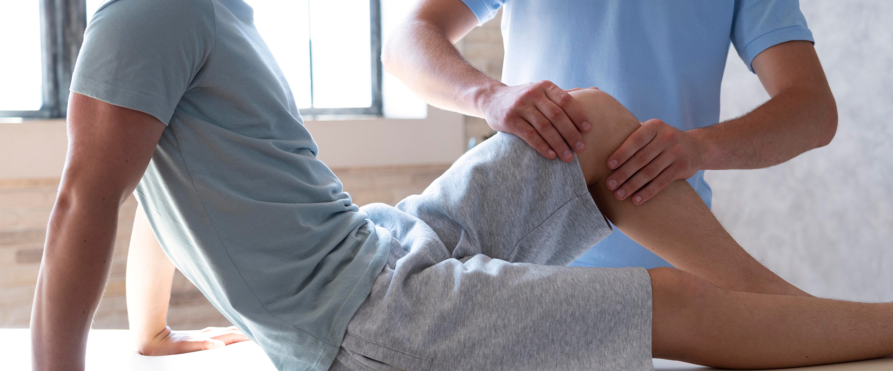
Assessment
We aim for gathering all relevant information that being necessary to make optimal diagnosis and treatment strategies accordingly from patient’s background information to patient’s concern specific information.
Diagnosis
Based on the assessment, we aiming to make precise diagnosis as much as possible with considering other potential possible other hypothesis based on patient’s specific context and pathophysiology of the condition.
Treatment
We provide evidence-based treatment tailored to the underlying cause.
Follow-up management
To track down how much the treating condition has been improved employing objective outcome measurement and re-adjust ongoing management planning based on the outcome.
Referral
If the progress is being determined that requires further investigation, we make referral to appropriate professionals including other allied health professionals, GPs and specialist.
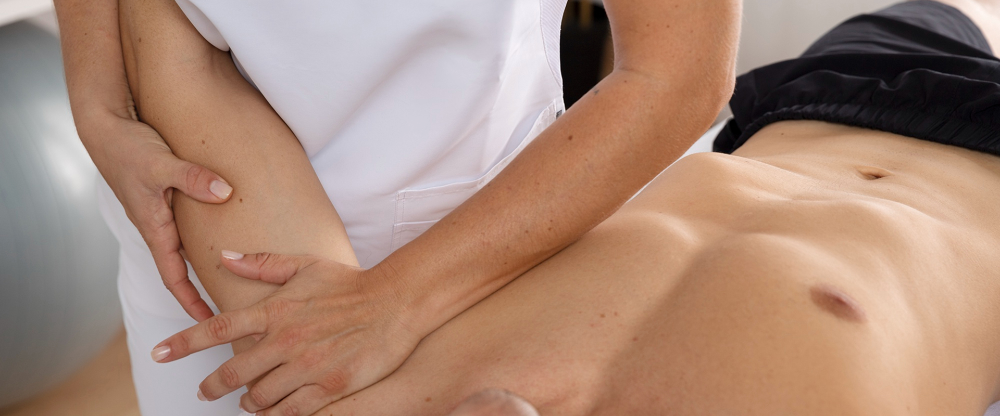
Soft tissue mobilisation
As a hands-on technique used to treat muscles, fascia, ligaments, and tendons—the "soft tissues" of the body. The goal is to reduce pain, improve mobility, increase circulation, and promote healing.
Occupational Health
1. Prevention of Work-Related Injuries
Ergonomic assessments (e.g., desk setup, lifting techniques)
Education on posture, body mechanics, and injury prevention
Exercise programs to reduce risk of musculoskeletal disorders (e.g., back pain, RSI)
2. Rehabilitation for Return to Work
Physiotherapy treatment after a workplace injury
Gradual return-to-work plans
Exercise programs to reduce risk of musculoskeletal disorders (e.g., back pain, RSI)
3. Workplace Health Promotion
Wellness programs (stretching at work, physical activity, etc.)
Stress management and mental well-being strategies
Advice on reducing sedentary behavior
4. Fit-for-Work Assessments & Job-Specific Training
Assessing whether a worker can meet the physical demands of a role
Tailored training to build strength, mobility, or endurance for specific job tasks
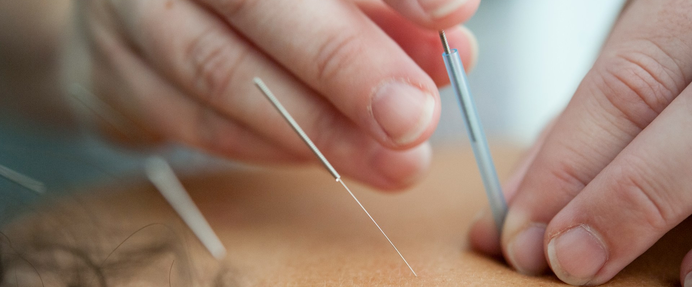
Dry needling
Myofascial pain syndrome
Muscle tightness or spasms
Chronic pain conditions (like neck pain, back pain, shoulder pain)
Sports injuries
Tendonitis
Joint dysfunction
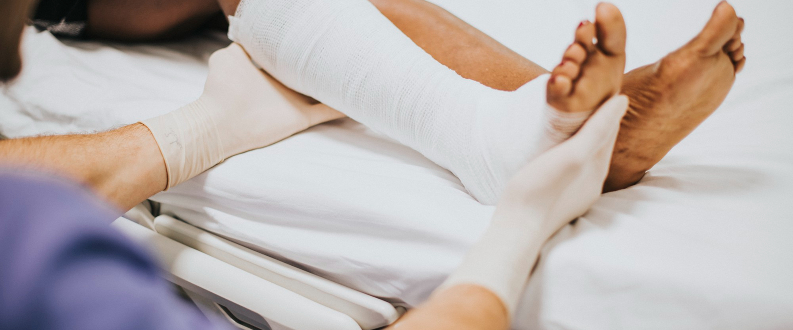
Fibreglass casting
Fractures (broken bones): arm, leg, wrist, ankle, etc.
Severe sprains
Post-operative support
Correction of deformities in children (e.g., clubfoot)
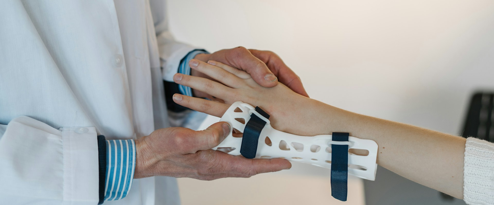
Thermoplastic splinting
Post-surgical joint protection (e.g., tendon repairs)
Fracture bracing (non-weight-bearing)
Nerve injuries (e.g., radial/ulnar nerve palsy)
Joint deformity correction (e.g., rheumatoid arthritis)
Burn or scar contracture prevention
Spasticity control in neurological conditions (e.g., stroke, cerebral palsy)
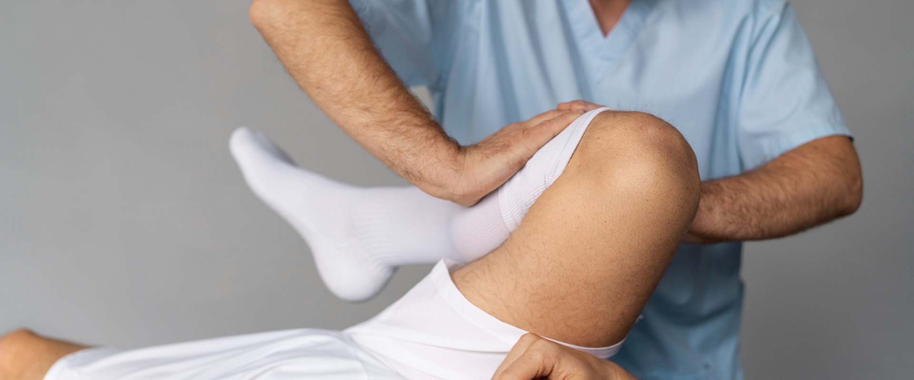
Joint manipulation
Releasing joint restrictions
Reducing pain quickly
Restoring lost motion
Improving alignment or biomechanics
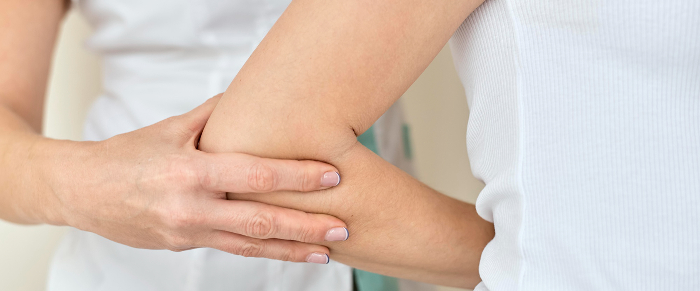
Joint mobilisation
Pain reduction
Improving joint stiffness
Increasing range of motion (ROM)
Enhancing joint nutrition (synovial fluid movement)
Prehabilitation & rehabilitation exercise program & guidance
1. Prehabilitation
Prehabilitation is a preventive physiotherapy program designed to enhance strength, flexibility, cardiovascular fitness, and neuromuscular control before surgery or in high-risk individuals (e.g., athletes, elderly, people with chronic conditions).
2. Rehabilitation
Rehabilitation is the structured process of restoring function and reducing disability after injury, surgery, or illness through individualized physiotherapy programs.
3. Goals of Rehabilitation
Restore strength, range, endurance
Control pain and swelling
Improve joint mobility
Prevent complications (e.g., contractures, atrophy)
Return to work, sport, or daily activities
Telehealth consultations available upon request
Concussion
1. Understanding this common brain injury
A concussion is a type of traumatic brain injury (TBI) caused by a bump, blow, or jolt to the head, or by a hit to the body that causes the head and brain to move rapidly back and forth. This sudden movement can cause the brain to bounce around or twist within the skull, stretching and damaging brain cells and creating chemical changes in the brain. Despite common misconceptions, a concussion does not always involve a loss of consciousness. In fact, most concussions occur without the person being knocked out. They are considered a mild traumatic brain injury (mTBI) but can still have serious and lasting effects if not managed properly.
2. Common Mechanism of Injury (MOI)
Concussions often result from forces that cause rapid acceleration or deceleration of the head, leading to the brain colliding with the inside of the skull. Common scenarios include
Sports Injuries
Direct blows to the head (e.g., football tackles, soccer headers, hockey checks), falls
in sports like cycling or gymnastics, or collisions with other players or equipment.
Falls
Especially common in older adults, young children, or individuals with balance issues.
Motor Vehicle Accidents
Whiplash-type injuries where the head is jolted violently forward and backward, or
direct impact to the head.
Workplace Accidents
Falls from heights, impacts from falling objects, or slips and trips.
Assaults
Direct blows to the head.
3. Common Symptoms
Concussion symptoms can appear immediately after the injury or develop hours to days later. They are often subtle and can vary widely from person to person. They generally fall into four categories
Physical Symptoms
Headache (most common), Nausea or vomiting, Dizziness or balance problems, Fatigue or
low energy, Vision problems (blurry, double vision, sensitivity to light), Sensitivity
to noise
Cognitive Symptoms
Feeling "foggy" or "slowed down", Difficulty concentrating or remembering, Confusion or
disorientation, Difficulty thinking clearly
Emotional Symptoms
Irritability or mood swings, Anxiety or nervousness, Sadness or depression, Increased
emotionality
Sleep Symptoms
Drowsiness or sleeping more than usual, Difficulty falling asleep or staying asleep,
Sleeping less than usual
It's crucial to seek medical attention if a concussion is suspected, as symptoms can worsen or linger. In rare cases, more serious brain injuries can mimic concussion symptoms.
4. How Physiotherapy Can Help with Concussion
Physiotherapists play a vital role in concussion management and rehabilitation, particularly after initial medical clearance. Our evidence-based approach focuses on safely and effectively guiding your recovery. Here's how physiotherapy can help
Comprehensive Assessment
We perform a thorough assessment to evaluate your balance, eye movements (oculomotor
function), neck stability, dizziness, headaches, and cognitive function related to
exertion.
Vestibular Rehabilitation
If you experience dizziness or balance issues, specific exercises can retrain your
vestibular system (inner ear and its connections to the brain) to improve balance and
reduce dizziness.
Oculomotor (Vision) Training
Exercises designed to improve eye tracking, focus, and coordination, which can reduce
symptoms like blurred vision, reading difficulties, and eye strain.
Cervical (Neck) Treatment
Many concussion symptoms (e.g., headaches, dizziness) can originate from the neck.
Physiotherapy techniques like manual therapy, mobilization, and specific exercises can
address neck pain, stiffness, and associated symptoms.
Graduated Return-to-Activity Protocols
We guide you through a carefully planned, step-by-step progression back to daily
activities, work, school, and sport. This ensures your brain has time to heal and
prevents a relapse of symptoms. This often includes
- Rest and Active Recovery : Guiding appropriate rest, followed by gradual
reintroduction of light activity.
- Return-to-Learn / Work : Helping you manage cognitive demands in academic or work
environments.
- Return-to-Sport : A structured program to safely reintroduce sport-specific
activities.
Exercise Tolerance Training
Gradually increasing your tolerance to physical activity without triggering symptoms.
Education and Self-Management
Empowering you with knowledge about concussion recovery, symptom management strategies,
and when to seek further help.
Physiotherapy is crucial for optimizing your recovery, preventing prolonged symptoms (Post-Concussion Syndrome), and safely returning you to your full activities.
Headaches / migraines
1. Understanding and Managing Your Pain
Headaches are a common ailment, but migraines are a specific type of severe headache that can be debilitating. While all migraines are headaches, not all headaches are migraines. Understanding the differences and the underlying causes is key to effective management.
Headaches
Broadly defined as pain in any region of the head. Common types include
- Tension Headaches : The most common type, often described as a constant, dull ache or
pressure around the head, like a tight band. They can be triggered by stress, fatigue,
or poor posture.
- Cervicogenic Headaches : Headaches referred from structures in the neck (cervical
spine). Pain often starts in the neck or back of the head and radiates to the front,
side, or around the eye. Neck movement can worsen them.
- Cluster Headaches : Rare but extremely painful headaches that occur in "clusters" or
cycles. They are characterized by severe, sharp pain usually behind or around one eye,
often accompanied by tearing, redness, nasal congestion, or drooping eyelid on the
affected side.
Migraines
More than just a bad headache, migraines are a complex neurological condition. They are
typically characterized by
- Moderate to severe throbbing or pulsing pain, often on one side of the head (though it
can be on both).
- Associated symptoms like nausea, vomiting, and extreme sensitivity to light
(photophobia) and sound (phonophobia).
- Auras: About 20-25% of people experience an "aura" before or during a migraine. These
are reversible neurological symptoms, most commonly visual disturbances (e.g., flashing
lights, zigzags, blind spots) but can also include tingling or numbness.
2. Common Mechanism of Injury (MOI) / Triggers
Unlike traumatic injuries, headaches and migraines often don't have a single "mechanism of injury" but rather a combination of triggers or underlying predisposing factors.
Tension/Cervicogenic Headaches
- Sustained poor posture : Especially common with prolonged computer use, phone use, or
reading.
- Muscle tension and stiffness : In the neck, shoulders, and upper back.
- Stress and anxiety : Leading to increased muscle tension.
- Fatigue or lack of sleep.
- Jaw clenching or teeth grinding (TMJ dysfunction).
Migraines
The exact mechanism is still being researched, but it involves changes in the brain,
including nerve pathways and brain chemicals. Triggers can vary widely for individuals
and may include
- Stress : A very common trigger.
- Hormonal changes : Especially in women (menstrual cycle, pregnancy, menopause).
- Sleep patterns : Too much, too little, or irregular sleep.
- Dietary factors : Certain foods (e.g., aged cheeses, processed meats, artificial
sweeteners, caffeine withdrawal, alcohol) or skipping meals.
- Sensory stimuli : Bright lights, strong smells, loud noises.
- Weather changes : Barometric pressure changes.
- Physical exertion.
- Medication overuse : Paradoxically, overusing acute headache medications can lead to
more frequent headaches.
3. Common Symptoms
While specific symptoms define different headache types, there's often overlap.
Headaches (General)
- Dull, aching, throbbing, or pressure-like pain.
- Pain in the forehead, temples, back of the head, or neck.
- Muscle tenderness in the neck or shoulders.
Migraines (Specific)
- Pulsating/throbbing pain (often severe).
- Unilateral pain (one side of the head) is common, but can be bilateral.
- Nausea and/or vomiting.
- Photophobia (sensitivity to light).
- Phonophobia (sensitivity to sound).
- Osmophobia (sensitivity to smell).
- Aura symptoms (visual disturbances, sensory changes) preceding the headache.
- Worsening pain with physical activity.
- Fatigue, difficulty concentrating, neck stiffness before or after the attack.
4. How Physiotherapy Can Help
Physiotherapy is an incredibly effective, evidence-based approach for
managing and preventing various types of headaches, particularly tension and cervicogenic
headaches, and can also play a supportive role in migraine management.
Here's how physiotherapy can help
Comprehensive Assessment
Your physiotherapist will conduct a thorough assessment of your neck, upper back,
posture, jaw, and movement patterns to identify potential contributing factors to your
headaches. They will also delve into your headache history, frequency, intensity, and
triggers.
Manual Therapy
Hands-on techniques to release muscle tension, improve joint mobility in the neck and
upper back, and reduce nerve irritation. This can include massage, joint mobilization,
and soft tissue release.
Targeted Exercise Prescription
- Strengthen deep neck muscles to improve stability and endurance.
- Improve posture and ergonomic habits.
- Increase flexibility in tight muscles of the neck, shoulders, and chest.
- Enhance range of motion in the cervical and thoracic spine.
Ergonomic and Postural Advice
Guidance on optimizing your workstation setup, sleeping posture, and daily habits to
reduce strain on your neck and head.
Stress Management Techniques
While we don't treat stress directly, physiotherapists can teach relaxation techniques
and breathing exercises that help reduce muscle tension often associated with
stress-induced headaches.
Dry Needling / Acupuncture
Can be used to release trigger points in tight muscles contributing to headache pain.
Education
Understanding your headache triggers, learning self-management strategies, and knowing
when to seek further medical advice are crucial for long-term relief. We'll empower you
with the knowledge to manage your condition effectively.
Migraine Support
While we don't "cure" migraines, physiotherapy can help manage neck stiffness and
tension that often accompany or trigger migraine attacks, and can provide strategies to
improve overall resilience to triggers.
By addressing the musculoskeletal contributors and providing comprehensive self-management tools, physiotherapy aims to reduce the frequency, intensity, and duration of your headaches, improving your overall quality of life.
Neck
1. What It Is & Common Types
Neck is a complex and delicate structure made up of seven small vertebrae,
supported by numerous muscles, ligaments, and nerves. It's designed to support the weight of
your head (around 5 kg!), allow for extensive movement, and protect your spinal cord. Neck
pain arises when any of these structures are irritated, inflamed, or damaged.
Common
types of neck pain and related issues include
Mechanical Neck Pain
This is the most common type, often due to poor posture, muscle strain, or joint
stiffness in the neck and upper back. It's usually aggravated by certain movements or
sustained positions.
Cervicogenic Headaches
Headaches that originate from problems in the neck. Pain often starts in the neck or
back of the head and refers to the front, side, or around the eye.
Whiplash
An injury to the neck caused by a sudden, forceful back-and-forth movement of the head,
typically from a car accident or fall.
It can affect muscles, ligaments, discs, and nerves.
Radiculopathy (Pinched Nerve)
Occurs when a nerve root in the neck is irritated or compressed, often by a herniated
disc, bone spur, or narrowed spinal canal. This can cause pain, numbness, tingling, or
weakness that radiates down the arm into the hand or fingers.
Degenerative Conditions
As we age, wear and tear can occur in the neck's discs and joints (e.g., osteoarthritis,
degenerative disc disease). This can lead to stiffness, pain, and sometimes nerve
compression.
Torticollis (Wry Neck)
A condition where neck muscles contract, causing the head to twist to one side. It can
be acute (sudden onset, often from sleeping in a bad position) or chronic.
2. Common Mechanism of Injury (MOI)
Neck pain often results from
Poor Posture
Prolonged periods of slouching, "text neck" (looking down at phones), or incorrect
ergonomic setup at work or home. This puts excessive strain on neck muscles and joints
over time.
Sudden Movements/Trauma
- Whiplash : As mentioned, sudden acceleration-deceleration forces, most commonly from
rear-end car collisions.
- Falls : Landing on your head, shoulder, or back can jolt the neck.
- Sports Injuries : Direct impact, falls, or sudden twisting motions in sports.
Repetitive Strain
Activities that involve repeated neck movements or sustained awkward positions (e.g.,
certain occupations, hobbies).
Sleeping Positions
Using too many pillows, a pillow that doesn't provide adequate support, or sleeping in
an awkward position can strain the neck overnight.
Stress
High stress levels can lead to increased muscle tension in the neck and shoulders,
contributing to pain.
3. Common Symptoms
Symptoms of neck pain can vary widely in intensity and type. They may include
Localized Pain
Aching, stiffness, or sharp pain in the neck itself.
Radiating Pain
Pain that travels down the arm, into the shoulder blade, or up into the head (leading to
headaches).
Stiffness and Reduced Range of Motion
Difficulty turning your head side to side, looking up or down. Often described as a
"creaky" or "stuck" feeling.
Muscle Spasm
Tight, knotted muscles in the neck, shoulders, or upper back.
Numbness, Tingling, or Weakness
If a nerve is pinched, you might experience these sensations in your arm, hand, or
fingers.
Headaches
Especially cervicogenic headaches, which originate from neck issues.
Clicking or Grinding Sounds
With neck movement, particularly if there's joint degeneration.
Difficulty Sleeping
Finding a comfortable position can be challenging.
4. How Physiotherapy Can Help with Neck Pain
Physiotherapy is highly effective in diagnosing and treating neck pain,
providing relief, and preventing recurrence. Our approach focuses on identifying the root
cause of your pain and empowering you with strategies for long-term management.
Here's
how physiotherapy can help
Thorough Assessment
We'll conduct a detailed examination of your neck, upper back, shoulders, and posture to
pinpoint the source of your pain and contributing factors. We'll also assess your
movement patterns, muscle strength, and nerve function.
Pain Relief Strategies
- Manual Therapy : Hands-on techniques such as massage, joint mobilization, and soft
tissue release to reduce muscle tension, improve joint movement, and alleviate nerve
irritation.
- Dry Needling/Acupuncture : Can be used to release trigger points in tight muscles that
contribute to neck pain and headaches.
- Modalities : Applying heat or ice, or using electrotherapy (like TENS) to help reduce
pain and inflammation.
Restoring Movement & Strength
- Targeted Exercise Prescription : We'll design a personalized exercise program to
strengthen weak muscles (especially deep neck stabilizers), stretch tight muscles, and
improve the overall flexibility and range of motion in your neck and upper back.
- Postural Correction : Guidance on maintaining optimal posture in various activities
(sitting, standing, sleeping) to reduce strain.
Ergonomic Advice
Assessing your workspace, car setup, and even sleeping environment to suggest
modifications that support a healthy neck posture and prevent future pain.
Education & Self-Management
Empowering you with a clear understanding of your condition, common triggers, and
effective self-management techniques. This includes teaching you stretches, exercises,
and relaxation strategies you can use at home to maintain progress and prevent
re-injury.
Whiplash Rehabilitation
Specific, gentle exercises and manual therapy to restore neck movement and function
after a whiplash injury, preventing chronic pain development.
Radiculopathy Management
Strategies to decompress irritated nerves, reduce inflammation, and restore arm/hand
function, often involving specific exercises and nerve gliding techniques.
By addressing the underlying issues and providing you with the tools for self-care, physiotherapy aims to reduce your pain, restore full function, and help you return to your daily activities pain-free.
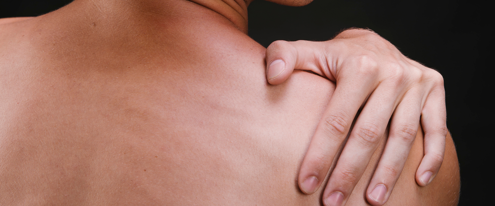
Shoulder
1. What It Is & Common Types
The shoulder is one of the most mobile joints in the body, capable of a
remarkable range of motion. This flexibility, however, comes at the cost of stability,
making it highly susceptible to injury and pain. Shoulder pain can significantly impact
daily activities, from reaching overhead to sleeping comfortably. Your shoulder is a complex
ball-and-socket joint formed by three main bones: the upper arm bone (humerus), the shoulder
blade (scapula), and the collarbone (clavicle). It's supported by a network of muscles
(especially the rotator cuff), tendons, and ligaments that work together to allow movement
and provide stability. Shoulder pain arises when any of these structures are irritated,
inflamed, or damaged.
Common types of shoulder pain and conditions include
Rotator Cuff Injuries
This is very common, involving damage to one or more of the four muscles and their
tendons that surround the shoulder joint. This can range from tendinitis (inflammation
of the tendons) to partial or full tears due to overuse or acute injury.
Shoulder Impingement Syndrome
Occurs when the rotator cuff tendons or bursa (a fluid-filled sac that reduces friction)
get compressed or "impinged" between the top of the arm bone and the acromion (part of
the shoulder blade) during arm elevation.
Frozen Shoulder (Adhesive Capsulitis)
Characterized by stiffness and pain in the shoulder joint, which gradually worsen over
time, severely limiting range of motion. It often progresses through painful,
stiffening, and thawing stages.
Bursitis
Inflammation of the bursa, often due to repetitive motion or direct trauma.
Osteoarthritis (Degenerative Joint Disease)
Wear and tear of the joint cartilage, leading to pain, stiffness, and reduced movement,
particularly common in older adults.
Shoulder Instability/Dislocation
Occurs when the head of the humerus comes partially (subluxation) or completely
(dislocation) out of the shoulder socket.
AC Joint Injury (Acromioclavicular Joint)
An injury to the joint where the collarbone meets the shoulder blade, often from a fall
directly onto the shoulder.
Biceps Tendinitis
Inflammation or irritation of the biceps tendon, which runs through the front of the
shoulder.
1. Common Mechanism of Injury (MOI)
Shoulder injuries can result from various factors, often involving repetitive movements, sudden trauma, or age-related degeneration
Overhead Activities/Repetitive Motion
Sports like swimming, throwing (baseball, cricket), tennis, or occupations requiring
frequent overhead reaching (painters, electricians) can lead to overuse injuries like
rotator cuff tendinitis or impingement.
Falls
Falling directly onto the shoulder, landing on an outstretched arm, or falling from a
height can cause fractures, dislocations, or rotator cuff tears.
Direct Impact
A blow to the shoulder from contact sports or accidents.
Lifting Heavy Objects
Especially if done improperly or with a sudden, jerky motion.
Age-Related Degeneration
Over time, the tendons and cartilage in the shoulder can wear down, making them more
susceptible to injury or leading to conditions like osteoarthritis.
Poor Posture
Chronic slouching or rounded shoulders can alter the mechanics of the shoulder joint,
increasing the risk of impingement or muscle strain.
3. Common Symptoms
Shoulder pain symptoms vary depending on the underlying cause, but commonly include
Pain
Can be dull and aching, sharp, or shooting. It may be localized to the shoulder joint or
radiate down the arm or up into the neck.
Stiffness
Difficulty moving the shoulder through its full range, especially common with frozen
shoulder or arthritis.
Weakness
Difficulty lifting the arm, reaching overhead, or performing daily tasks. This can be a
sign of a rotator cuff tear or nerve involvement.
Clicking, Popping, or Grinding Sensations
Often felt with movement, especially in cases of instability or degenerative changes.
Limited Range of Motion
Inability to raise the arm fully, rotate it outwards, or reach behind the back.
Pain with Specific Movements
Worsening pain when reaching overhead, reaching behind the back, or sleeping on the
affected side.
Night Pain
Pain that disrupts sleep, a common symptom of rotator cuff issues.
4. How Physiotherapy Can Help with Shoulder Pain
Physiotherapy is often the first line of treatment for shoulder pain,
providing effective, non-surgical solutions to reduce pain, restore function, and prevent
recurrence. Our goal is to get you back to your normal activities pain-free.
Here's how physiotherapy can help
Comprehensive Assessment
Your physiotherapist will conduct a thorough examination of your shoulder, neck, upper
back, and posture to identify the precise source of your pain, contributing factors, and
any underlying movement dysfunctions.
Pain Relief Strategies
- Manual Therapy : Hands-on techniques such as massage, joint mobilization (gently
moving the shoulder joint), and soft tissue release to reduce muscle tension, improve
joint movement, and alleviate pain.
- Dry Needling / Acupuncture : Can be used to target specific trigger points in muscles
contributing to shoulder pain.
- Modalities: Applying heat or ice, or using electrotherapy (like TENS) to help manage
pain and inflammation.
Restoring Movement & Strength
- Targeted Exercise Prescription : We'll design a personalized exercise program to :
Improve range of motion (flexibility and mobility) in your shoulder, Strengthen the
rotator cuff muscles and other surrounding muscles (e.g., scapular stabilizers) to
improve stability and control, Enhance posture and body mechanics to reduce strain on
the shoulder.
- Functional Training: Gradual progression of exercises to mimic daily activities, work
tasks, or sports-specific movements, ensuring a safe return to full function.
Education & Self-Management
Empowering you with a clear understanding of your condition, common triggers, and
effective self-management techniques. This includes advice on activity modification,
pain management strategies, and prevention exercises to maintain long-term shoulder
health.
Post-Surgical Rehabilitation
If surgery is necessary (e.g., rotator cuff repair), your physiotherapist will guide you
through a structured rehabilitation program to optimize healing, regain strength and
movement, and safely return to your desired activities.
By identifying the root cause of your shoulder pain and providing a tailored rehabilitation program, physiotherapy empowers you to regain full use of your arm, reduce pain, and prevent future issues.
Elbow / forearm
1. What They Are & Common Types
Elbow & Forearm Pain : Understanding and Healing Your Arm
The elbow is a crucial hinge joint connecting your upper arm bone (humerus) to the two bones
in your forearm (radius and ulna). The forearm itself extends from the elbow to the wrist,
housing a complex network of muscles, tendons, and nerves that control movements of the
elbow, wrist, and fingers. Due to their interconnectedness and constant use in daily
activities, work, and sports, the elbow and forearm are frequently sites of pain and injury.
Pain in the elbow or forearm can originate from various structures, including muscles,
tendons, ligaments, bones, or nerves.
Tendinopathies (Overuse Injuries)
- Tennis Elbow (Lateral Epicondylitis) : Pain on the outer part of the elbow, stemming
from overuse or degeneration of the tendons connecting forearm extensor muscles to the
elbow. Often exacerbated by gripping and wrist extension.
- Golfer's Elbow (Medial Epicondylitis) : Pain on the inner part of the elbow, caused by
overuse or degeneration of the tendons connecting forearm flexor muscles to the elbow.
Worsened by gripping and wrist flexion.
Nerve Compression Syndromes
- Cubital Tunnel Syndrome : Compression or irritation of the ulnar nerve as it passes
around the inner elbow. Leads to numbness, tingling, and weakness in the little finger
and half of the ring finger, often exacerbated by prolonged elbow bending.
- Radial Tunnel Syndrome : Compression of the radial nerve in the forearm, causing
aching pain or tenderness on the outer forearm, often mistaken for tennis elbow.
- Pronator Teres Syndrome : Compression of the median nerve by the pronator teres muscle
in the forearm, leading to pain in the forearm and numbness/tingling in the thumb,
index, middle, and half of the ring finger.
Bursitis
Olecranon Bursitis (Student's Elbow) : Inflammation of the fluid-filled sac at the very
tip of the elbow, typically causing swelling and pain at the back of the elbow.
Ligament Injuries
Elbow Sprains : Damage to the ligaments supporting the elbow joint, often seen in
throwing athletes (e.g., Ulnar Collateral Ligament - UCL injury) due to repetitive
stress.
Fractures
Breaks in the bones of the elbow or forearm (humerus, radius, ulna), usually caused by
direct trauma or falls.
Muscle Strains
Overstretching or tearing of the muscles in the forearm due to sudden force or overuse.
Compartment Syndrome (Acute/Chronic)
Increased pressure within the muscle compartments of the forearm, potentially impairing
blood supply and nerve function. Acute is a medical emergency; chronic can occur with
repetitive exercise.
2. Common Mechanism of Injury (MOI)
Elbow and forearm pain most frequently result from repetitive strain or direct trauma.
Repetitive Overuse
- Sports : Throwing sports (baseball, javelin), racquet sports (tennis, badminton),
golf, and activities requiring strong, repetitive gripping or wrist movements.
- Occupations : Manual labor (carpenters, plumbers, mechanics), typing, assembly line
work, or prolonged use of hand tools.
- Hobbies : Knitting, gardening, playing musical instruments.
- Improper technique : Using incorrect form during sports or work tasks can place undue
stress on the elbow and forearm structures.
Direct Trauma
- Falls : Falling onto an outstretched arm (FOOSH injury) is a common cause of
fractures, dislocations, or sprains in the elbow and forearm.
- Direct impact : A blow to the elbow or forearm can cause bruising, fractures, or
bursitis.
Sustained Pressure/Postures
- Leaning on the elbow for prolonged periods (Olecranon Bursitis).
- Repetitive or sustained awkward wrist or forearm positions (contributing to nerve
entrapments or muscle imbalances).
3. Common Symptoms
Symptoms can vary widely depending on the specific condition but often include
Pain
Can range from a dull ache to sharp, burning, or shooting pain.
- Localized pain : At the outer or inner elbow (Tennis/Golfer's Elbow), or along the
forearm.
- Pain with movement : Aggravated by specific arm, wrist, or hand actions (e.g.,
gripping, lifting, turning a doorknob, typing).
Tenderness
Pain when pressing on the affected area (e.g., bony epicondyles for tendinopathies).
Stiffness
Difficulty fully straightening or bending the elbow, or rotating the forearm.
Weakness
Reduced grip strength, difficulty lifting or carrying objects, or performing fine motor
tasks.
Swelling
Visible swelling around the elbow or forearm, particularly with bursitis, fractures, or
acute injury.
Numbness, Tingling, or Burning Sensations
Often indicative of nerve involvement, these sensations may radiate into the forearm,
wrist, hand, or fingers.
Clicking, Popping, or Grinding Sensations
With elbow movement, can suggest joint surface issues or loose bodies.
Limited Range of Motion
Inability to move the elbow or forearm through its full, normal arc.
4. How Physiotherapy Can Help with Elbow & Forearm Pain
Physiotherapy is highly effective in treating most elbow and forearm
conditions, providing pain relief, restoring function, and preventing recurrence. Our
approach focuses on a thorough assessment to identify the precise cause of your pain and
developing a personalized, evidence-based rehabilitation plan.
Here's how physiotherapy can help
Comprehensive Assessment
We will conduct a detailed examination of your entire upper limb (neck, shoulder, elbow,
forearm, wrist, and hand) to pinpoint the source of your pain and identify any
contributing factors such as muscle imbalances, joint stiffness, nerve compression, or
postural issues.
Pain Relief Strategies
- Manual Therapy : Hands-on techniques like massage, soft tissue release, joint
mobilizations, and nerve gliding exercises to reduce pain, inflammation, and improve
tissue mobility.
- Dry Needling / Acupuncture : Can be used to release trigger points in tight or
overactive muscles in the forearm and arm that contribute to pain.
- Therapeutic Modalities : Applying ice or heat, or using electrotherapy (like TENS) to
help manage acute pain and swelling.
Restoring Movement & Strength
Targeted Exercise Prescription: We'll design a personalized exercise program to
- Improve flexibility and range of motion in your elbow, forearm, and wrist.
- Strengthen weak or imbalanced muscles (e.g., forearm extensors/flexors, rotator cuff)
to enhance stability and endurance.
- Implement eccentric loading exercises (crucial for tendinopathies like Tennis/Golfer's
Elbow) to promote tendon healing and strengthen the tendon structure.
- Address postural imbalances that may increase stress on the elbow and forearm.
Activity Modification & Ergonomic Advice
We'll help you identify and modify the activities, techniques (e.g., in sports or at
work), or tools that aggravate your condition. This includes providing ergonomic
assessments and advice for your workstation, sports equipment, or daily tasks to reduce
strain.
Bracing / Taping
Recommendation and application of supportive braces (e.g., tennis elbow brace) or
therapeutic taping to offload stressed tendons, support ligaments, or stabilize the
joint during recovery.
Education & Self-Management
Empowering you with a clear understanding of your condition, common triggers, and
effective self-management techniques. Learning how to manage your symptoms, prevent
future flare-ups, and progress your exercises independently is key to long-term success.
Post-Surgical Rehabilitation
If surgery is necessary (e.g., for complex fractures or severe nerve compression), your
physiotherapist will guide you through a structured rehabilitation program to optimize
healing, regain strength, movement, and safely return to your desired activities.
By identifying the specific cause of your elbow or forearm pain and providing a tailored rehabilitation program, physiotherapy empowers you to reduce pain, regain full function, and return to your work, sports, and daily life without limitations.
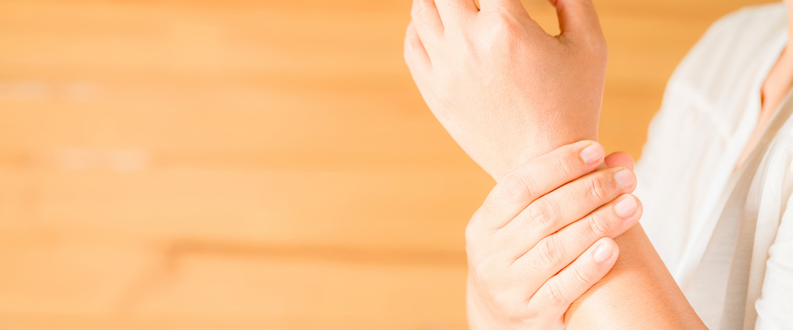
Wrist / hand
1. What They Are & Common Types
Wrist & Hand Pain: Understanding and Healing Your Hand and Wrist.
The wrist is a complex joint connecting the forearm to the hand, which itself contains 27
bones, numerous small joints, and an intricate network of muscles, tendons, ligaments, and
nerves. This intricate design allows for remarkable dexterity, strength, and sensory
perception, making the hand and wrist essential for nearly all daily activities. Due to
their constant use and exposure, the wrist and hand are highly susceptible to pain, injury,
and overuse conditions. Pain in the wrist or hand can stem from problems with bones, joints,
ligaments, tendons, or nerves.
Carpal Tunnel Syndrome (CTS)
Compression of the median nerve as it passes through the carpal tunnel in the wrist.
This typically causes numbness, tingling, and pain in the thumb, index, middle, and half
of the ring finger, often worsening at night or with repetitive hand movements.
De Quervain's Tenosynovitis
Inflammation of the tendons on the thumb side of the wrist, particularly those involved
in thumb movement. It causes pain and tenderness at the base of the thumb and wrist,
often aggravated by gripping or pinching.
Trigger Finger/Thumb
A condition where a finger or thumb gets "stuck" in a bent position and then suddenly
straightens with a "snap" or "pop." It's caused by inflammation or a nodule in the
tendon sheath, preventing smooth gliding of the tendon.
Ganglion Cysts
Non-cancerous, fluid-filled lumps that commonly develop along the tendons or joints of
the wrist or hand. While often harmless, they can cause pain if they press on a nerve or
interfere with joint movement.
Osteoarthritis
Degenerative "wear and tear" of the joint cartilage. It commonly affects the thumb base
joint (CMC joint), causing pain, stiffness, swelling, and reduced grip strength. It can
also affect other small joints in the hand.
Rheumatoid Arthritis
An autoimmune disease that causes chronic inflammation of the joints, commonly affecting
the small joints of the wrist and hand. It leads to pain, swelling, stiffness
(especially in the morning), and can cause joint deformity.
Wrist Sprains/Fractures
Injuries to the ligaments or bones of the wrist, often from a fall onto an outstretched
hand (FOOSH injury). Fractures of the scaphoid bone (a small bone in the wrist) are
common but can be difficult to diagnose.
Tendonitis/Tenosynovitis
General inflammation or irritation of tendons and their protective sheaths in the wrist
or hand due to overuse or repetitive strain.
2. Common Mechanism of Injury (MOI)
Wrist and hand injuries frequently arise from repetitive movements, sustained awkward postures, or direct trauma.
Repetitive Strain / Overuse
- Work-related : Typing, using a mouse, assembly line work, gripping tools,
hairdressing, gaming.
- Sports : Golf, tennis, bowling, climbing, cycling, weightlifting, gymnastics.
- Hobbies : Knitting, gardening, playing musical instruments.
- These repetitive actions can lead to inflammation and irritation of btendons and
nerves (e.g., Carpal Tunnel Syndrome, De Quervain's Tenosynovitis).
Direct Trauma
- Falls: Falling directly onto an outstretched hand (FOOSH) is a very common cause of
wrist fractures (e.g., Colles' fracture, scaphoid fracture) and sprains.
- Direct Impact : Blows to the hand or wrist from accidents or contact sports.
Awkward Positions
Maintaining the wrist in bent or awkward positions for prolonged periods can compress
nerves or strain tendons.
Vibrating Tools
Prolonged use of vibrating tools can contribute to nerve and circulation issues in the
hand.
Systemic Conditions
Underlying conditions like diabetes, thyroid issues, or rheumatoid arthritis can
predispose individuals to certain hand/wrist problems.
3. Common Symptoms
Symptoms of wrist and hand pain can vary widely depending on the specific condition and the structures involved. Common symptoms include
Pain
Can be localized (e.g., thumb side of wrist for De Quervain's), diffuse, sharp, aching,
burning, or throbbing. Pain may worsen with specific movements or activities.
Stiffness
Difficulty moving the wrist or fingers, especially in the morning or after periods of
rest.
Numbness, Tingling, or Pins and Needles
Often indicative of nerve compression (e.g., Carpal Tunnel Syndrome, Cubital Tunnel
Syndrome radiating to the hand). Sensations may affect specific fingers or parts of the
hand.
Weakness
Reduced grip strength, difficulty pinching, or weakness in performing fine motor tasks.
Swelling
Visible swelling in the wrist, hand, or fingers.
Clicking, Popping, or Catching
Sensations felt during movement, particularly with Trigger Finger/Thumb or joint
instability.
Reduced Range of Motion
Inability to fully bend, straighten, or rotate the wrist, or to fully flex/extend the
fingers.
Burning Sensation
Can be associated with nerve irritation.
Visible Lump
Such as with a ganglion cyst.
4. How Physiotherapy Can Help with Wrist & Hand Pain
Physiotherapy is highly effective in diagnosing and treating most
wrist and hand conditions, providing pain relief, restoring function, and preventing
recurrence. Our detailed assessment helps identify the precise cause of your pain and guide
a personalized, evidence-based rehabilitation plan.
Here's how physiotherapy can help
Comprehensive Assessment
We will conduct a thorough examination of your wrist, hand, fingers, forearm, elbow, and
even your neck and shoulder, as issues further up the kinetic chain can refer pain or
contribute to wrist/hand problems. We'll assess your strength, flexibility, nerve
function, and movement patterns.
Pain Relief Strategies
- Manual Therapy : Hands-on techniques such as massage, joint mobilizations (gentle
movements of the small bones/joints), and soft tissue release to reduce pain,
inflammation, and improve tissue mobility.
- Dry Needling / Acupuncture : Can be used to release trigger points in tight or
overactive muscles in the forearm and hand that contribute to pain.
- Therapeutic Modalities : Applying ice or heat, or using electrotherapy (like TENS) to
help manage acute pain and swelling.
Restoring Movement & Strength
Targeted Exercise Prescription: We'll design a personalized exercise program to
- Improve flexibility and range of motion in your wrist, hand, and fingers.
- Strengthen the small muscles of the hand and forearm, improving grip strength, pinch
strength, and overall dexterity.
- Address any underlying muscle imbalances.
- Nerve Gliding Exercises : Specific movements to help free up compressed or irritated
nerves, reducing numbness and tingling.
- Fine Motor Control Exercises : Activities designed to improve coordination and
precision for daily tasks.
Activity Modification & Ergonomic Advice
We'll help you identify and modify the activities, techniques, or tools that aggravate
your condition. This includes providing ergonomic assessments for your workstation
(keyboard, mouse setup), advice on proper gripping, lifting, and posture during work or
hobbies.
Splinting / Bracing
Recommendation and fitting of custom or off-the-shelf splints or braces to support the
wrist or hand, reduce strain, and promote healing (e.g., for Carpal Tunnel Syndrome or
De Quervain's).
Education & Self-Management
Empowering you with a clear understanding of your condition, common triggers, and
effective self-management techniques. Learning how to manage your symptoms, protect your
joints, and perform your exercises consistently is crucial for long-term hand and wrist
health.
Post-Surgical Rehabilitation
If surgery is necessary (e.g., for Carpal Tunnel release, fracture repair, or severe
arthritis), your physiotherapist will guide you through a structured rehabilitation
program to optimize healing, regain strength, movement, and safely return to your daily
activities and work.
By addressing the specific cause of your wrist or hand pain and providing a tailored rehabilitation program, physiotherapy empowers you to reduce pain, regain full function, and return to your work, sports, and daily life without limitations.
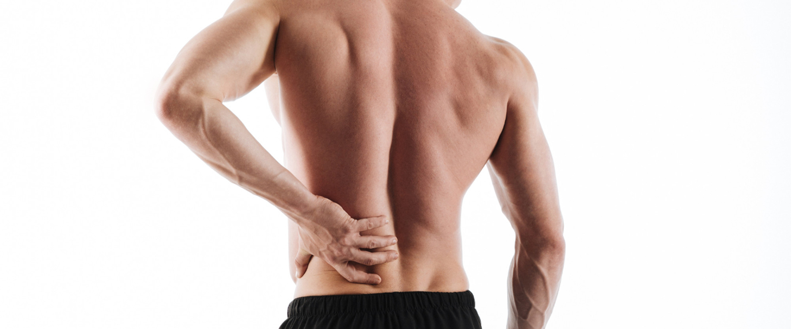
Upper / mid / lower back
1. What They Are & Common Types
Back Pain: Understanding and Healing Your Upper, Mid, and Lower Back
Back pain is one of the most common complaints worldwide, affecting a vast majority of
people at some point in their lives. It can range from a dull ache to sharp, debilitating
pain, significantly impacting daily activities, work, and quality of life. Understanding
that back pain can originate from different regions of the spine - the upper (thoracic), mid
(thoracic/lumbar junction), and lower (lumbar) back - is key to effective diagnosis and
treatment. Your spine is a complex column of bones (vertebrae), cushioning discs, muscles,
and ligaments, designed to support your body, allow movement, and protect your spinal cord.
Pain arises when any of these structures, or the nerves exiting the spine, become irritated,
strained, or damaged.
General Types of Back Pain
- Mechanical Back Pain : The most common type, referring to pain arising from the
muscles, ligaments, facet joints, or discs. It's often related to movement, posture, or
activity.
- Radicular Pain (Sciatica) : Pain that radiates along the path of a nerve, often caused
by compression or irritation of a spinal nerve root. It is typically sharp, shooting, or
burning, and can be accompanied by numbness, tingling, or weakness.
Specific Conditions by Region
1.
Lower Back Pain (Lumbar Spine) :
The lumbar spine bears the most weight and is the most common site of back pain.
- Lumbar Muscle Strain / Ligament Sprain : Overstretching or tearing of muscles and
ligaments from heavy lifting, sudden movements, or overuse.
- Herniated Disc (Slipped Disc / Bulging Disc) : When the soft inner material of a
spinal disc pushes out, potentially compressing nearby nerves. This can cause
localized pain or radiating pain (sciatica).
- Degenerative Disc Disease : Age-related wear and tear of the spinal discs, leading
to pain, stiffness, and sometimes nerve compression.
- Facet Joint Osteoarthritis : Degeneration of the small joints connecting
vertebrae, causing localized pain and stiffness that worsens with certain movements.
- Spinal Stenosis : Narrowing of the spinal canal, which can compress the spinal
cord or nerves, leading to leg pain, numbness, or weakness, especially with walking.
- Spondylolisthesis : When one vertebra slips forward over another, often causing
instability and pain.
2.
Mid Back Pain (Thoracolumbar Junction) :
Pain around the lower ribs to just below the shoulder blades.
- Often a transition zone, so can be affected by issues from both the lumbar and
thoracic spine.
- Commonly associated with muscular imbalances or postural stress.
3.
Upper Back Pain (Thoracic Spine) :
The thoracic spine is relatively stable due to its attachment to the rib cage.
- Muscle Strain/Imbalance : Very common due to poor posture, prolonged sitting
(especially at computers), or lifting. Often presents as aching, burning, or
tightness between the shoulder blades.
- Rib Joint Dysfunction : Stiffness or irritation of the joints where the ribs
attach to the spine, which can cause sharp, localized pain that worsens with deep
breaths or twisting.
- Rounded Shoulders (Kyphosis) : Poor posture can lead to excessive rounding of the
upper back, straining muscles and ligaments.
2. Common Mechanism of Injury (MOI) / Contributing Factors
Back pain often results from a combination of factors, rather than a single acute injury.
Poor Posture
Prolonged sitting or standing with a slouched or unnatural posture (e.g., "text neck" or
rounded shoulders) places excessive stress on spinal discs, joints, and muscles over
time. This is a major contributor to upper, mid, and lower back pain.
Improper Lifting Techniques
Lifting heavy objects by bending the back instead of the knees puts immense strain on
the lower back, often leading to disc injuries or muscle strains.
Sudden Movements/Trauma
- Twisting: Sudden, uncontrolled twisting motions of the torso.
- Falls : Landing awkwardly on the back or buttocks.
- Motor Vehicle Accidents : Especially rear-end collisions that cause whiplash or sudden
jolts to the torso.
Repetitive Motions
Activities involving repeated bending, twisting, or lifting.
Lack of Physical Activity
/ Weak Core
Muscles
A sedentary lifestyle and weak core (abdominal and back) muscles reduce spinal support,
making it more vulnerable to injury.
Overuse/Overexertion
Pushing the back too hard during exercise, manual labor, or sports without adequate
conditioning.
Stress
High levels of stress can lead to increased muscle tension in the back, particularly the
upper and mid-back.
Obesity
Excess body weight puts additional strain on the lumbar spine.
Age-Related Changes
Discs and joints naturally undergo degenerative changes over time, increasing
susceptibility to pain.
3. Common Symptoms
Symptoms vary depending on the location and specific cause of the pain
Lower Back Pain
- Dull ache or sharp, piercing pain in the lower back.
- Stiffness, especially in the morning or after prolonged sitting/standing.
- Pain that radiates down one or both legs (sciatica), possibly accompanied by numbness,
tingling, or weakness in the leg or foot.
- Pain that worsens with bending, lifting, twisting, coughing, or sneezing.
- Difficulty standing straight or walking.
Mid Back Pain
- Aching or burning pain between the shoulder blades or in the middle of the back.
- Stiffness or tightness.
- Pain that may wrap around to the chest or abdomen.
- Often aggravated by prolonged sitting, especially at a computer.
Upper Back Pain
- Aching, soreness, or tightness between the shoulder blades.
- Pain or stiffness with neck and shoulder movements.
- Headaches (cervicogenic) can sometimes be related to upper back stiffness.
- Pain that may feel worse after prolonged hunching or computer use.
4. How Physiotherapy Can Help with Back Pain
Physiotherapy is a highly effective, evidence-based approach to managing
and resolving back pain across all regions of the spine. Our holistic approach focuses on
understanding the specific cause of your pain, alleviating symptoms, and empowering you with
strategies to prevent future episodes.
Here's how physiotherapy can help
Comprehensive Assessment
Your physiotherapist will conduct a thorough examination of your entire spine (neck,
upper, mid, and lower back), posture, movement patterns, muscle strength, flexibility,
and nerve function to accurately diagnose the source of your pain.
Pain Relief Strategies
- Manual Therapy : Hands-on techniques such as massage, joint mobilizations (gentle
movements to restore spinal joint mobility), and soft tissue release to reduce muscle
spasm, stiffness, and pain.
- Dry Needling / Acupuncture : Can be used to release trigger points in tight or painful
back muscles.
- Therapeutic Modalities : Applying heat or ice, or using electrotherapy (like TENS) to
help manage acute pain and inflammation.
Restoring Movement & Strength
Targeted Exercise Prescription : We'll design a personalized exercise program to
- Improve spinal mobility and flexibility.
- Strengthen core muscles (deep abdominals and back muscles) to provide better support
for your spine.
- Strengthen other key muscle groups (e.g., glutes, shoulders) to improve overall body
mechanics.
- Improve posture and body awareness to reduce strain.
- Nerve Gliding Exercises : Specific exercises to help free up irritated or compressed
nerves, reducing radiating pain, numbness, and tingling.
Ergonomic & Postural Advice
Guidance on optimizing your workstation, sleeping positions, and daily habits to
minimize strain on your back. We'll help you develop sustainable habits for long-term
spinal health.
Education & Self-Management
Empowering you with a clear understanding of your condition, common triggers, and
effective self-management techniques. This includes teaching you safe lifting
techniques, stretches, and exercises you can perform independently to maintain progress
and prevent recurrence.
Activity Modification
Advising on how to modify daily activities, work tasks, or sports techniques to reduce
stress on your back during the healing process and beyond.
By identifying the root cause of your back pain and providing a tailored rehabilitation program, physiotherapy empowers you to reduce pain, regain full function, and return to your daily activities, work, and hobbies with confidence and less risk of future episodes.
Hip / groin
1. What It Is & Common Types
Hip & Groin Pain : Understanding and Healing Your Lower Body
The hip joint is one of the body's largest weight-bearing joints, a robust ball-and-socket
structure that connects your leg to your pelvis. Its design allows for a wide range of
motion crucial for walking, running, jumping, and various daily activities. The groin area,
located where the abdomen meets the thigh, involves muscles (adductors, hip flexors),
ligaments, and tendons that are essential for leg movement and stability. Due to their
complex mechanics and central role in movement, both the hip and groin are common sites for
pain and injury. Pain in the hip or groin can originate from issues within the hip joint
itself (intra-articular) or from the surrounding muscles, tendons, ligaments, and bursae
(extra-articular). Pain can also be referred from the lower back.
Hip Osteoarthritis (OA)
Degenerative "wear and tear" of the cartilage in the hip joint, leading to pain,
stiffness (especially in the morning or after rest), and reduced range of motion. It
typically worsens with activity.
Tendinopathies
- Gluteal Tendinopathy (Greater Trochanteric Pain Syndrome) : Pain on the outer side of
the hip and upper thigh, caused by overuse or degeneration of the gluteal tendons
(gluteus medius and minimus) that attach to the hip bone. Often painful when lying on
the affected side, walking, or going up stairs.
- Adductor Tendinopathy / Groin Strain : Pain in the inner thigh/groin region, often
seen in athletes involved in kicking, sprinting, or rapid changes of direction. It's an
injury to the adductor muscles or their tendons.
- Hip Flexor Tendinopathy : Pain at the front of the hip (often associated with
iliopsoas tendon) due to overuse, common in runners, dancers, or those who sit for long
periods.
Hip Impingement
(Femoroacetabular Impingement -
FAI)
Occurs when there's abnormal contact between the ball (femoral head) and socket
(acetabulum) of the hip joint during movement. This can cause pain in the groin or front
of the hip, especially with deep bending (squatting) or internal rotation.
Bursitis
- Trochanteric Bursitis : Inflammation of the bursa located on the outer hip (over the
greater trochanter), causing pain and tenderness, similar to gluteal tendinopathy.
- Iliopsoas Bursitis : Inflammation of the bursa at the front of the hip, often
associated with hip flexor issues.
Muscle Strains
- Groin Strains : Acute tears or pulls of the adductor muscles on the inner thigh,
common in sports involving sudden acceleration or changes of direction.
- Hamstring Strains : Though primarily affecting the back of the thigh, high hamstring
strains can cause pain close to the sitting bone and deep in the gluteal fold, sometimes
confused with hip pain.
Referred Pain
Pain that originates from another area but is felt in the hip or groin, most commonly
from the lower back (e.g., sciatica, facet joint dysfunction) or the sacroiliac (SI)
joint.
Stress Fractures
Small cracks in bones, often in the femoral neck or pelvis, from repetitive impact
(e.g., in long-distance runners).
2.
Common Mechanism of Injury (MOI)
/ Contributing
Factors
Hip and groin pain often result from a combination of acute trauma, chronic overuse, or underlying biomechanical issues.
Overuse / Repetitive Strain
- Running and jumping sports : High-impact activities place significant stress on hip
joints and surrounding tendons.
- Sports involving kicking, twisting, or rapid changes of direction : Football, soccer,
hockey, basketball are common culprits for groin strains and tendinopathies.
- Prolonged sitting : Can lead to tight hip flexors and weak gluteal muscles, affecting
hip mechanics.
- Occupations : Jobs requiring prolonged standing, walking, lifting, or repetitive
bending.
Acute Trauma
- Falls : Falling directly onto the hip can cause fractures, dislocations, or labral
tears.
- Direct Impact : Blows to the hip area in contact sports.
- Sudden forceful movements : A sudden lunge, kick, or twist can strain muscles or
sprain ligaments.
Age-Related Changes
- Osteoarthritis : The natural degeneration of joint cartilage over time.
Biomechanical Factors
- Muscle Imbalances : Weakness in the gluteal muscles or core, or tightness in hip
flexors or adductors, can alter hip mechanics and increase strain.
- Poor Posture : Can affect alignment and load distribution on the hip.
- Changes in Training : Sudden increases in training volume, intensity, or a change in
footwear/surface.
3. Common Symptoms
Symptoms of hip and groin pain vary widely depending on the specific condition and structures involved, but may include
Pain Location
- Front of the hip/groin : Common with hip flexor issues, hip impingement, or hip joint
problems (like OA).
- Outer hip / thigh : Characteristic of gluteal tendinopathy or trochanteric bursitis.
- Buttock/Deep Gluteal : Can be hamstring issues, deep gluteal pain syndrome, or
referred from the lower back/SI joint.
- Inner thigh/groin : Typical of adductor strains or tendinopathy.
Pain Characteristics
Can be aching, sharp, throbbing, burning, or dull. May be worse with activity, after
prolonged sitting, or at night.
Stiffness
Especially in the morning or after rest, common with osteoarthritis or tendinopathies.
Reduced Range of Motion
Difficulty moving the leg in certain directions (e.g., bringing knee to chest, rotating
leg inwards/outwards, crossing legs).
Weakness
Difficulty with activities like walking, climbing stairs, standing on one leg, or
pushing off.
Clicking, Popping, or Catching
Sensations within the hip joint, sometimes indicating cartilage or labral issues.
Limping (Antalgic Gait)
A change in walking pattern to avoid pain.
Radiating Pain
Pain that travels down the leg, which could indicate nerve involvement (e.g., sciatica).
4. How Physiotherapy Can Help with Hip & Groin Pain
Physiotherapy is an incredibly effective, evidence-based approach to
assessing, treating, and managing most hip and groin conditions. Our goal is to identify the
root cause of your pain, alleviate symptoms, restore function, and prevent recurrence,
helping you return to your daily activities, work, and sports with confidence.
Here's
how physiotherapy can help
Comprehensive Assessment
Your physiotherapist will conduct a thorough examination of your hip, groin, lower
back, pelvis, knee, and ankle, as issues in these areas can all contribute to
hip/groin pain. We'll assess your posture, walking pattern, muscle strength,
flexibility, joint mobility, and nerve function.
Your physiotherapist will conduct a thorough examination of your entire spine (neck,
upper, mid, and lower back), posture, movement patterns, muscle strength,
flexibility, and nerve function to accurately diagnose the source of your pain.
Pain Relief Strategies
- Manual Therapy : Hands-on techniques such as massage, soft tissue release, joint
mobilizations (to improve hip or spinal joint movement), and gentle stretching to
reduce pain, muscle spasm, and stiffness.
- Dry Needling / Acupuncture : Can be used to target specific trigger points in
tight or overactive muscles contributing to hip or groin pain (e.g., glutes,
adductors, hip flexors).
- Therapeutic Modalities : Applying ice or heat to manage acute pain and
inflammation.
- Manual Therapy : Hands-on techniques such as massage, joint mobilizations (gentle
movements to restore spinal joint mobility), and soft tissue release to reduce
muscle spasm, stiffness, and pain.
- Dry Needling / Acupuncture : Can be used to release trigger points in tight or
painful back muscles.
- Therapeutic Modalities : Applying heat or ice, or using electrotherapy (like TENS)
to help manage acute pain and inflammation.
Restoring Movement & Strength
Targeted Exercise Prescription : We'll design a personalized exercise program to
- Improve hip joint mobility and flexibility.
- Strengthen key stabilizing muscles around the hip and pelvis (especially gluteal
muscles and deep hip rotators).
- Improve core stability and strength, which is vital for pelvic and hip control.
- Address muscle imbalances in the hip and thigh (e.g., strengthening weak adductors
or hip flexors, or stretching tight ones).
- Incorporate eccentric loading exercises for tendinopathies to promote tendon
healing and strength.
- Functional Rehabilitation : Progressing exercises to mimic your daily activities,
work tasks, and sports-specific movements (e.g., running drills, jumping, changing
direction).
- Improve spinal mobility and flexibility.
- Strengthen core muscles (deep abdominals and back muscles) to provide better
support for your spine.
- Strengthen other key muscle groups (e.g., glutes, shoulders) to improve overall
body mechanics.
- Improve posture and body awareness to reduce strain.
- Nerve Gliding Exercises : Specific exercises to help free up irritated or
compressed nerves, reducing radiating pain, numbness, and tingling.
Gait Analysis & Biomechanical Correction
Assessment of your walking or running pattern to identify and correct any underlying
biomechanical inefficiencies that may be contributing to your pain.
Ergonomic & Postural Advice
Guidance on optimizing your workstation, sleeping positions, and daily habits to
minimize strain on your back. We'll help you develop sustainable habits for long-term
spinal health.
Education & Self-Management
Empowering you with a clear understanding of your condition, common triggers, and
effective self-management strategies. Learning how to manage your symptoms, perform
your exercises consistently, and prevent future issues is crucial for long-term
health.
Empowering you with a clear understanding of your condition, common triggers, and
effective self-management techniques. This includes teaching you safe lifting
techniques, stretches, and exercises you can perform independently to maintain
progress and prevent recurrence.
Post-Surgical Rehabilitation
If surgery is necessary (e.g., hip arthroscopy for impingement, hip replacement), your
physiotherapist will guide you through a structured rehabilitation program to optimize
healing, regain strength, movement, and safely return to your desired activities.
Activity Modification
Advising on how to modify daily activities, work tasks, or sports techniques to reduce
stress on your back during the healing process and beyond.
By identifying the specific cause of your hip or groin pain and providing a tailored rehabilitation program, physiotherapy empowers you to reduce pain, regain full function, and return to your work, sports, and daily life without limitations.
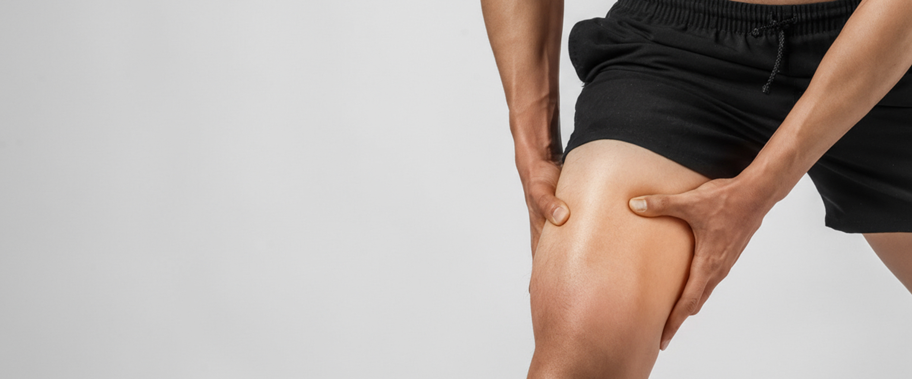
Thigh
1. What It Is & Common Types
Thigh Pain: Understanding and Healing Your Upper Leg
The thigh is
the region of the leg between the hip and the knee. It contains the large, strong femur
(thigh bone) and some of the body's most powerful muscle groups: the quadriceps (at the
front), hamstrings (at the back), and adductors (on the inner thigh). These muscles are
crucial for walking, running, jumping, balancing, and supporting your body weight. Due to
the high demands placed on them during daily activities and sports, the thigh muscles and
surrounding structures are prone to injury and pain. Pain in the thigh can arise from
various structures, including muscles, tendons, bones, or nerves, or it can be referred from
the hip or lower back.
Muscle Strains (Pulls)
These are very common, involving overstretching or tearing of muscle fibers.
- Hamstring Strain : The most common thigh injury, usually occurring at the back of the
thigh during sprinting, sudden acceleration, or overstretching. Symptoms range from mild
discomfort to severe sharp pain, often with bruising.
- Quadriceps Strain : Affects the front of the thigh, often from kicking, jumping, or
sprinting.
- Adductor (Groin) Strain : Involves the inner thigh muscles, common in sports requiring
rapid changes of direction or forceful kicking.
Contusions (Corked Thigh)
A bruise caused by a direct blow or impact to the thigh, commonly to the quadriceps.
This leads to localized pain, swelling, tenderness, and often a visible bruise.
Tendinopathies
Overuse or degeneration of the tendons connecting muscles to bone.
- Proximal Hamstring Tendinopathy : Pain deep in the buttock region where the hamstrings
attach to the sitting bone (ischial tuberosity), often aggravated by prolonged sitting
or running.
- Quadriceps Tendinopathy : Pain just above the kneecap where the quadriceps tendon
inserts, common in jumping sports.
Referred Pain
Pain felt in the thigh that actually originates from a problem elsewhere, most commonly
the lower back (e.g., sciatica radiating down the back of the thigh) or the hip joint.
Nerve Entrapment
- Meralgia Paresthetica : Compression of the lateral femoral cutaneous nerve as it
passes through the groin area, causing burning pain, numbness, or tingling on the outer
aspect of the thigh. Often linked to tight clothing, weight gain, or certain postures.
Stress Fractures
Small cracks in the femur (thigh bone), usually due to repetitive high-impact loading,
such as in long-distance runners.
Compartment Syndrome
Increased pressure within the muscle compartments of the thigh. Can be acute (medical
emergency) or chronic (exertional), causing pain, tightness, and sometimes numbness
during exercise.
2.
Common Mechanism of Injury (MOI)
/ Contributing
Factors
Thigh pain often results from a combination of acute trauma, chronic overuse, or underlying biomechanical issues.
Sudden Overload/Explosive Movements
- Sprinting, jumping, kicking : Common causes of hamstring or quadriceps strains due to
rapid muscle contraction or stretch.
- Rapid changes of direction : Frequently lead to adductor (groin) strains.
Direct Impact
A direct blow to the thigh (e.g., from sports collision, fall) can cause a muscle
contusion (corked thigh).
Repetitive Strain / Overuse
- Running, cycling, repetitive squatting/lunging : Can lead to tendinopathies in the
hamstrings or quadriceps.
- Sudden increase in training volume or intensity : Overloads muscles and tendons that
are not adequately conditioned.
Poor Biomechanics & Muscle Imbalances
- Weakness : Especially in the gluteal muscles or core, can lead to increased reliance
on thigh muscles and improper movement patterns.
- Tightness : Tight hamstrings or quadriceps can increase injury risk during sudden
movements.
- Poor Running / Movement Form : Can place excessive stress on specific thigh muscles or
tendons.
Prolonged Postures
Certain seated positions or tight clothing can compress nerves (e.g., Meralgia
Paresthetica).
3. Common Symptoms
Symptoms of thigh pain vary depending on the specific condition and the structures involved
Pain Location
- Back of thigh : Common with hamstring strains or proximal hamstring tendinopathy.
- Front of thigh : Indicative of quadriceps strains or tendinopathy.
- Inner thigh / groin : Suggests adductor (groin) strain.
- Outer thigh (burning/numbness) : Points towards Meralgia Paresthetica.
- Pain that radiates from hip / buttock or lower back : Suggests referred pain.
Pain Characteristics
Can be sharp (acute strain), aching (tendinopathy, contusion), burning (nerve), or deep
and dull (stress fracture). Pain often worsens with specific movements, activity, or
direct touch.
Swelling & Bruising
Common with muscle strains and contusions.
Tenderness
Pain upon touching the injured area.
Weakness
Difficulty with activities like walking, climbing stairs, pushing off, or sprinting.
Stiffness
Reduced flexibility in the thigh muscles, making movements like bending the knee or
straightening the leg difficult.
Numbness or Tingling
Sensations on the skin, often associated with nerve irritation or compression.
Limited Range of Motion
Inability to fully bend or straighten the knee or hip without pain.
4. How Physiotherapy Can Help with Thigh Pain
Physiotherapy is highly effective in diagnosing and treating most
thigh pain conditions, providing pain relief, restoring function, and preventing recurrence.
Our comprehensive approach focuses on accurately identifying the cause of your pain and
developing a tailored rehabilitation plan.
Here's how physiotherapy can help
Comprehensive Assessment
Your physiotherapist will conduct a thorough examination of your entire lower limb (hip,
knee, ankle, foot), pelvis, and lower back to understand how these areas contribute to
your thigh pain. We'll assess your strength, flexibility, movement patterns, gait, and
nerve function.
Pain Relief Strategies
- Manual Therapy : Hands-on techniques such as massage, soft tissue release (especially
for muscle strains / contusions), and joint mobilizations (for associated hip or knee
stiffness) to reduce pain and muscle spasm.
- Dry Needling / Acupuncture : Can target specific trigger points in tight or injured
thigh muscles to alleviate pain and promote healing.
- Therapeutic Modalities : Applying ice or heat to manage acute pain and inflammation.
Restoring Movement & Strength
Targeted Exercise Prescription : We'll design a personalized, progressive exercise
program to
- Improve flexibility and range of motion of the thigh muscles and surrounding joints.
- Strengthen the injured muscles (quadriceps, hamstrings, adductors) through controlled
loading. This often includes eccentric strengthening (e.g., Nordic hamstring curls)
which is crucial for tendinopathies and preventing hamstring re-injury.
- Strengthen complementary muscle groups, particularly the gluteal muscles and core
stabilizers, to improve hip and pelvic control and reduce strain on the thigh.
- Neuromuscular Control : Exercises to improve balance, coordination, and the brain's
ability to control muscle movements.
Biomechanical Analysis & Correction
Assessment of your walking, running, jumping, or sport-specific movements to identify
and correct any underlying biomechanical inefficiencies or faulty techniques that may be
contributing to your pain.
Activity Modification & Ergonomic Advice
Guidance on modifying aggravating activities, adjusting training loads, and optimizing
ergonomic setups to reduce stress on your thigh during recovery and prevent future
issues.
Education & Self-Management
Empowering you with a clear understanding of your condition, common triggers, and
effective self-management strategies. This includes teaching proper warm-up/cool-down
routines, stretching techniques, and appropriate loading principles for your muscles.
Progressive Return to Sport / Activity
A carefully structured, gradual program to safely return you to your desired level of
activity, sport, or work, minimizing the risk of re-injury.
By addressing the specific cause of your thigh pain and providing a tailored rehabilitation program, physiotherapy empowers you to reduce pain, regain full strength and function, and return to your activities with confidence.
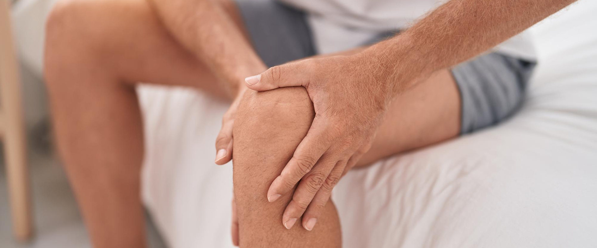
Knee
1. What It Is & Common Types
Knee Pain: Understanding and Healing Your Knee Joint
The knee is
the largest and one of the most complex joints in the body, acting as a crucial hinge
between the thigh bone (femur) and the shin bone (tibia). It also includes the kneecap
(patella). Supported by strong ligaments, cushioning cartilages (menisci), and powerful
muscles (quadriceps and hamstrings), the knee is designed for stability and mobility,
enabling movements like walking, running, jumping, and squatting. Given the significant
forces it endures, the knee is highly susceptible to various injuries and pain conditions.
Knee pain can arise from direct injury, overuse, mechanical problems, or conditions like
arthritis.
Ligament Injuries
Damage to the strong bands of tissue connecting bones.
- ACL (Anterior Cruciate Ligament) Injury : A common rupture or sprain of the ligament
that runs diagonally in the middle of the knee, vital for stability. Often occurs during
sudden stops, changes in direction, or landing awkwardly.
- PCL (Posterior Cruciate Ligament) Injury : Less common than ACL, usually from a direct
blow to the front of the knee.
- MCL (Medial Collateral Ligament) Injury : Damage to the ligament on the inside of the
knee, often from a blow to the outside of the knee.
- LCL (Lateral Collateral Ligament) Injury : Damage to the ligament on the outside of
the knee, less common, usually from a blow to the inside of the knee.
Meniscus Tears
The menisci are C-shaped pieces of cartilage that act as shock absorbers between the
thigh and shin bones. Tears can occur from twisting the knee or from degenerative
changes over time.
Patellofemoral Pain Syndrome
(Runner's Knee /
Anterior Knee Pain)
Pain around or behind the kneecap, often worse with activities like running, jumping,
squatting, or going up/down stairs. It's often due to imbalances in the muscles
surrounding the knee or poor kneecap tracking.
Osteoarthritis (OA)
Degenerative "wear and tear" of the cartilage in the knee joint, leading to pain,
stiffness (especially in the morning or after rest), swelling, and reduced range of
motion. It typically worsens with activity and cold weather.
Tendinopathies
Overuse or degeneration of tendons around the knee.
- Patellar Tendinopathy (Jumper's Knee) : Pain below the kneecap, common in sports
involving repetitive jumping and landing.
- Quadriceps Tendinopathy : Pain above the kneecap, affecting the quadriceps tendon.
- IT Band Syndrome (Iliotibial Band Friction Syndrome) : Pain on the outside of the
knee, often in runners or cyclists, caused by friction of the IT band over the outer
bony prominence of the knee.
Bursitis
Inflammation of a bursa (fluid-filled sac) around the knee, causing localized pain and
swelling. Common types include prepatellar bursitis (front of kneecap) or pes anserine
bursitis (inner knee below joint line).
Referred Pain
Pain felt in the knee that actually originates from another area, most commonly the
lower back or hip joint.
2.
Common Mechanism of Injury (MOI)
/ Contributing
Factors
Knee pain often results from
Acute Trauma / Direct Impact
- Twisting injuries : Often occur when the foot is planted and the body twists, leading
to meniscus or ligament (ACL, MCL) tears. Common in sports like football, basketball,
skiing.
- Direct blow to the knee : Can cause fractures, dislocations, or ligament injuries
(e.g., PCL injury from dashboard impact in car accident).
- Falls : Landing awkwardly can result in fractures or sprains
Repetitive Overload / Overuse
- Running, jumping, squatting, cycling : Repetitive stress can lead to patellofemoral
pain, IT band syndrome, or various tendinopathies.
- Occupations : Jobs requiring prolonged standing, kneeling, squatting, or heavy
lifting.
- Sudden increase in activity : Rapidly increasing training volume or intensity without
adequate conditioning.
Biomechanical Factors
- Muscle Imbalances : Weakness in the gluteal muscles (hip stabilizers), quadriceps, or
hamstrings can alter knee mechanics and increase stress.
- Poor Foot Mechanics : Overpronation (flat feet) or high arches can affect alignment up
to the knee.
- Inappropriate Footwear : Worn-out shoes or shoes not suited for the activity.
- Obesity : Excess body weight significantly increases load on the knee joints.
Age-Related Changes
- Osteoarthritis : The natural degeneration of cartilage over time.
- Degenerative Meniscus Tears : Can occur with minimal trauma as cartilage weakens with
age.
3. Common Symptoms
Symptoms of knee pain vary widely depending on the underlying cause but commonly include
Pain Location
Can be generalized, or localized to the front (around kneecap), inside, outside, or back
of the knee.
Pain Characteristics
Aching, sharp, burning, throbbing, or dull. May worsen with specific activities (e.g.,
stairs, squatting, running), after prolonged rest, or at night.
Swelling
Visible swelling around the knee joint (effusion) or localized swelling (bursitis).
Stiffness
Difficulty bending or straightening the knee, especially after rest.
Clicking, Popping, Catching, or Giving Way
Sensations within the joint, often indicating meniscus tears or instability.
Weakness
Difficulty supporting weight, walking, or performing activities that require knee
strength.
Limited Range of Motion
Inability to fully extend or bend the knee.
Instability
Feeling like the knee is "giving out" or "buckling".
Redness or Warmth
Suggests inflammation.
4. How Physiotherapy Can Help with Knee Pain
Physiotherapy is an incredibly effective, evidence-based approach to
diagnosing, treating, and managing most knee conditions, providing pain relief, restoring
function, and preventing recurrence. Our comprehensive approach focuses on understanding the
specific cause of your pain and developing a tailored rehabilitation plan to get you back to
your desired activities.
Here's how physiotherapy can help
Comprehensive Assessment
Your physiotherapist will conduct a detailed examination of your knee, hip, ankle, and
lower back to pinpoint the source of your pain and identify any contributing
biomechanical factors, muscle imbalances, or movement dysfunctions. We'll assess your
strength, flexibility, joint mobility, balance, and gait.
Pain Relief Strategies
- Manual Therapy : Hands-on techniques such as massage, soft tissue release, and gentle
joint mobilizations to reduce pain, stiffness, and muscle spasm around the knee and
surrounding areas.
- Dry Needling / Acupuncture : Can target specific trigger points in tight or painful
muscles contributing to knee pain.
- Therapeutic Modalities : Applying ice or heat to manage acute pain and inflammation.
Restoring Movement & Strength
Targeted Exercise Prescription: We'll design a personalized, progressive exercise
program to
- Improve knee joint mobility and flexibility.
- Strengthen the muscles around the knee (quadriceps, hamstrings, calves) and
importantly, the hip and gluteal muscles, which are crucial for knee stability and
proper alignment.
- Enhance core strength for overall body control.
- Improve balance and proprioception (the body's sense of position), especially
important after ligament or meniscal injuries.
- Neuromuscular Control : Exercises to retrain efficient movement patterns and improve
the coordination between muscles.
Biomechanical Analysis & Correction
Assessment of your walking, running, jumping, or sport-specific movements to identify
and correct any underlying inefficiencies or faulty techniques that may be contributing
to your knee pain. This is vital for conditions like Patellofemoral Pain Syndrome or IT
Band Syndrome.
Activity Modification & Ergonomic Advice
Guidance on modifying aggravating activities, adjusting training loads, and optimizing
footwear or exercise techniques to reduce stress on your knee during recovery and
prevent future issues.
Education & Self-Management
Empowering you with a clear understanding of your condition, common triggers, and
effective self-management strategies. Learning proper warm-up/cool-down routines,
exercise progression, and listening to your body are key to long-term knee health.
Bracing / Taping
Recommendation and application of supportive braces or therapeutic taping to provide
stability, reduce pain, and facilitate proper movement during recovery.
Post-Surgical Rehabilitation
If surgery is necessary (e.g., ACL reconstruction, meniscus repair, knee replacement),
your physiotherapist will guide you through a structured, phased rehabilitation program
to optimize healing, regain strength, movement, and safely return to your desired
activities.
By identifying the specific cause of your knee pain and providing a tailored rehabilitation program, physiotherapy empowers you to reduce pain, regain full strength and function, and return to your work, sports, and daily life without limitations.
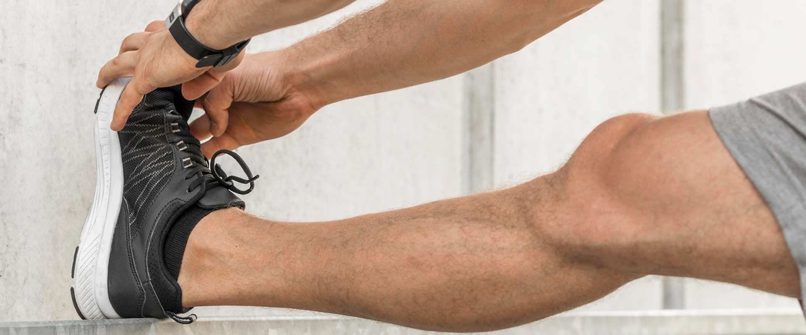
Shin / calf
1. What It Is & Common Types
Shin & Calf Pain: Understanding and Healing Your Lower Leg
The
shin (tibia and fibula bones) and calf (gastrocnemius and soleus muscles) form the lower
leg, playing a critical role in weight-bearing, propulsion during walking and running, and
stabilizing the ankle and foot. The calf muscles, in particular, are essential for pointing
your toes, pushing off the ground, and absorbing impact. Due to the high demands placed on
them during daily activities, sports, and exercise, the shin and calf are common sites for
various pain and injury conditions. Pain in the shin or calf can arise from muscles,
tendons, bones, or nerves, often due to overuse, impact, or sudden movements.
Shin Splints
(Medial Tibial Stress Syndrome -
MTSS)
This is one of the most common causes of shin pain, typically felt along the inner edge
of the shin bone. It's an overuse injury resulting from repetitive stress on the tibia
and the connective tissues surrounding it, often due to increased running, jumping, or
weight-bearing activity.
Calf Strains
(Gastrocnemius / Soleus
Strain)
A common muscle injury, particularly in the gastrocnemius (the larger, outer calf
muscle). Occurs when the muscle fibers are overstretched or torn, often during sudden
acceleration, pushing off, or jumping. Causes sharp pain in the back of the lower leg.
Achilles Tendinopathy
Pain and stiffness in the Achilles tendon, which connects the calf muscles to the heel
bone. It's an overuse injury caused by repetitive stress or sudden increases in
activity, often felt as aching or burning pain just above the heel.
Stress Fractures (Tibia or Fibula)
Tiny cracks in the shin bone (tibia) or fibula, caused by repetitive impact or excessive
loading without adequate recovery time. Leads to localized, deep aching pain that
worsens with activity and improves with rest.
Compartment Syndrome
(Exertional /
Chronic)
Increased pressure within the muscle compartments of the lower leg during exercise. This
can compress blood vessels and nerves, causing pain, tightness, numbness, or weakness in
the shin or calf during activity, which typically resolves with rest.
Referred Pain
Pain felt in the shin or calf that originates from another area, most commonly the lower
back (e.g., sciatica radiating down the leg) or conditions affecting the hip or knee.
Popliteal Cyst (Baker's Cyst)
A fluid-filled sac that forms at the back of the knee, which can sometimes extend down
into the calf, causing a feeling of tightness or swelling.
Nerve Entrapment
Less common, but specific nerves in the lower leg can become compressed, causing pain,
numbness, or tingling.
2.
Common Mechanism of Injury (MOI)
/ Contributing
Factors
Shin and calf pain frequently result from
Repetitive Impact / Overuse
- Running and jumping sports : Especially on hard surfaces, significantly increasing the
load on the shin bone and calf muscles (e.g., shin splints, Achilles tendinopathy,
stress fractures).
- Sudden increase in training load : Rapidly increasing duration, intensity, or
frequency of running, walking, or sports activities without allowing the body to adapt.
- Changes in footwear : Switching to less supportive shoes or worn-out footwear.
- Hard training surfaces : Running on concrete or asphalt rather than softer surfaces.
Sudden, Explosive Movements
- Sprinting, jumping, pushing off, sudden acceleration/deceleration : Common causes of
acute calf muscle strains.
Direct Trauma
A direct blow to the shin or calf can cause contusions (bruises) or, less commonly,
fractures.
Biomechanical Factors
- Foot mechanics : Overpronation (flat feet) or excessively high arches can alter load
distribution in the lower leg.
- Muscle imbalances : Weakness in the glutes, hips, or core, or tightness in the calf
muscles or hamstrings, can affect how forces are absorbed through the lower leg.
- Poor running form : Inefficient running mechanics can place excessive stress on
specific shin or calf structures.
Inadequate Warm-up / Cool-down
Not properly preparing muscles for activity or assisting recovery afterwards.
3. Common Symptoms
Symptoms of shin and calf pain vary depending on the specific condition but commonly include
Pain Location
- Inner shin bone : Classic for shin splints.
- Back of lower leg / calf : Calf strains, Achilles tendinopathy.
- Localized, sharp pain along a bone : Suggests a stress fracture.
- Diffuse aching or burning during exercise : May indicate exertional compartment
syndrome.
Pain Characteristics
Can be dull and aching, sharp, burning, or throbbing. Often worse with activity and
eases with rest (except for some stress fractures or compartment syndrome which can
linger/build).
Tenderness
Pain when touching or pressing on the affected area.
Swelling
May be visible, particularly with calf strains, Achilles tendinopathy, or compartment
syndrome.
Stiffness
Especially in the calf muscles or Achilles tendon, often worse in the morning.
Weakness
Difficulty pushing off with the foot, climbing stairs, or performing activities that
require calf strength.
Numbness or Tingling
Sensations in the shin, foot, or toes, which can indicate nerve compression.
Cramping
In the calf during or after activity (can be muscle fatigue, dehydration, or a sign of
nerve / circulation issues).
Popping Sensation
A sudden "pop" or "snap" may indicate an acute muscle tear (e.g., calf strain) or
Achilles tendon rupture.
4. How Physiotherapy Can Help with Shin & Calf Pain
Physiotherapy is a highly effective, evidence-based approach to diagnosing,
treating, and managing most shin and calf conditions. Our comprehensive assessment helps
identify the precise cause of your pain and guides a personalized rehabilitation plan to get
you back to your desired activities, pain-free.
Here's how physiotherapy can help
Comprehensive Assessment
Your physiotherapist will conduct a detailed examination of your lower leg, ankle, foot,
knee, hip, and even your lower back, as issues in these areas can all contribute to shin
/ calf pain. We'll assess your strength, flexibility, joint mobility, balance, walking /
running gait, and specific movement patterns.
Pain Relief Strategies
- Manual Therapy : Hands-on techniques such as massage, soft tissue release (for tight
calf muscles or fascial restrictions), and joint mobilizations (for ankle or foot
stiffness) to reduce pain and muscle tension.
- Dry Needling / Acupuncture : Can target specific trigger points in tight or injured
calf muscles or shin muscles to alleviate pain and promote healing.
- Therapeutic Modalities : Applying ice or heat to manage acute pain and inflammation.
Restoring Movement & Strength
Targeted Exercise Prescription: We'll design a personalized, progressive exercise
program to
- Improve flexibility and range of motion of the calf muscles, Achilles tendon, and
ankle joint.
- Strengthen the calf muscles (gastrocnemius, soleus), shin muscles, and other key lower
limb muscles (e.g., glutes, quadriceps) for improved propulsion and shock absorption.
- Incorporate eccentric loading exercises (e.g., calf raises with controlled lowering)
which are crucial for treating Achilles tendinopathy and some muscle strains.
- Enhance balance and proprioception through specific exercises.
- Gait & Running Analysis : Assessment of your walking or running pattern to identify
and correct any underlying biomechanical inefficiencies or faulty techniques that may be
contributing to your pain.
Activity Modification & Load Management
Guidance on how to modify aggravating activities, adjust training loads (duration,
intensity, frequency), and use proper warm-up/cool-down routines to allow healing and
prevent recurrence. This is critical for overuse injuries like shin splints and stress
fractures.
Footwear & Orthotic Advice
Assessment of your current footwear and recommendations for appropriate shoes. In some
cases, custom or off-the-shelf orthotics may be advised to address foot biomechanics.
Education & Self-Management
Empowering you with a clear understanding of your condition, common triggers, and
effective self-management strategies. Learning how to listen to your body, progress your
exercises safely, and implement preventive measures is crucial for long-term lower leg
health.
Bracing / Taping
Application of therapeutic tape or braces to provide support, reduce pain, and
facilitate proper muscle function during recovery.
Post-Surgical Rehabilitation
If surgery is necessary (e.g., for severe Achilles rupture or compartment syndrome
release), your physiotherapist will guide you through a structured, phased
rehabilitation program to optimize healing, regain strength, movement, and safely return
to your desired activities.
By identifying the specific cause of your shin or calf pain and providing a tailored rehabilitation program, physiotherapy empowers you to reduce pain, regain full strength and function, and return to your work, sports, and daily life without limitations.
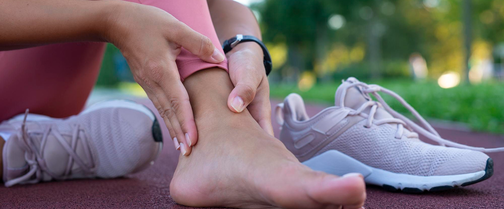
Ankle and foot
1. What It Is & Common Types
Ankle & Foot Pain: Understanding and Healing Your Foundations
Your
ankle is a complex hinge joint that connects your lower leg to your foot, allowing for
upward and downward movement, as well as some side-to-side motion. The foot is an intricate
structure comprising 26 bones, 33 joints, and over 100 muscles, tendons, and ligaments,
designed to absorb shock, adapt to uneven surfaces, and propel your body forward. Together,
the ankle and foot form the crucial foundation for all standing, walking, running, and
jumping activities. Due to the significant forces they endure and their intricate mechanics,
the ankle and foot are highly susceptible to pain, injury, and overuse conditions. Pain in
the ankle or foot can arise from bones, joints, ligaments, tendons, muscles, or nerves,
often due to acute injury, repetitive stress, or underlying biomechanical issues.
Ankle Sprains
Very common, especially lateral (inversion) ankle sprains, which occur when the foot
rolls inwards, stretching or tearing the ligaments on the outside of the ankle. They
range from mild (Grade I) to severe (Grade III, complete tear).
Plantar Fasciitis
One of the most common causes of heel pain, characterized by inflammation or
degeneration of the plantar fascia, a thick band of tissue running along the bottom of
the foot from the heel to the toes. Pain is typically worse with the first steps in the
morning or after prolonged rest, and with prolonged standing or activity.
Achilles Tendinopathy
Pain and stiffness in the Achilles tendon, which connects the calf muscles to the heel
bone. It's an overuse injury, often felt as aching or burning pain just above the heel,
exacerbated by activity.
Stress Fractures (Foot / Ankle)
Tiny cracks in the bones, commonly in the metatarsals (foot bones) or tibia/fibula
(lower leg bones near the ankle), caused by repetitive impact or excessive loading
without adequate recovery. Leads to localized, deep aching pain that worsens with
activity.
Shin Splints
(Medial Tibial Stress Syndrome -
MTSS)
While affecting the shin, symptoms often extend to the ankle, characterized by pain
along the inner edge of the shin bone, related to overuse.
Achilles Tendon Rupture
A complete tear of the Achilles tendon, causing sudden, severe pain, a "pop" sensation,
and inability to push off the foot.
Bunions (Hallux Valgus)
A bony bump that forms on the joint at the base of the big toe, causing the big toe to
deviate outwards. Can lead to pain, swelling, and difficulty with footwear.
Morton's Neuroma
Thickening of the tissue around a nerve, usually between the third and fourth toes,
causing sharp, burning pain, numbness, or tingling in the toes, often aggravated by
tight shoes.
Foot Arch Pain / Collapse
Pain or discomfort due to issues with the foot's arches (e.g., flat feet, high arches),
which can affect shock absorption and weight distribution.
Osteoarthritis
Degenerative "wear and tear" of the cartilage in the ankle or foot joints, leading to
pain, stiffness, and reduced movement, particularly in older adults or following
previous trauma.
Referred Pain
Pain felt in the ankle or foot that originates from another area, most commonly the
lower back (e.g., sciatica radiating down the leg).
2.
Common Mechanism of Injury (MOI)
/ Contributing
Factors
Ankle and foot pain frequently arise from
Acute Trauma
- Twisting or rolling the ankle : The most common cause of ankle sprains, often from
landing awkwardly, stepping on an uneven surface, or during sports.
- Direct impact : Dropping an object on the foot, or collisions in sports, can cause
fractures or contusions.
- Falls from height : Can lead to more severe fractures in the ankle or heel bone.
Repetitive Strain / Overuse
- Running and jumping sports : High-impact activities place significant stress on the
foot and ankle, leading to conditions like plantar fasciitis, Achilles tendinopathy, or
stress fractures.
- Prolonged standing or walking : Especially on hard surfaces or with inappropriate
footwear.
- Sudden increase in activity : Rapidly increasing the duration, intensity, or frequency
of exercise without adequate adaptation.
Biomechanical Factors
- Foot Arch Problems : Overpronation (flat feet) or excessively high arches can alter
the mechanics of the foot and ankle, leading to increased stress on certain structures.
- Muscle Imbalances : Weakness in muscles controlling the foot and ankle, or tightness
in the calf muscles, can affect stability and shock absorption.
- Poor Running/Walking Form : Inefficient gait mechanics can place excessive stress on
specific foot or ankle structures.
Inappropriate Footwear
Wearing shoes that lack support, cushioning, or are too tight can contribute to a
variety of foot and ankle problems (e.g., bunions, Morton's neuroma, plantar fasciitis).
Age-Related Changes
Degeneration of joints and tendons occurs naturally over time, increasing susceptibility
to conditions like osteoarthritis or Achilles tendinopathy.
3. Common Symptoms
Symptoms of ankle and foot pain vary widely depending on the specific condition but commonly include
Pain Location
Can be localized to the heel, arch, ball of foot, toes, ankle joint (inner, outer,
front, back), or generalized.
Pain Characteristics
Aching, sharp, burning, shooting, throbbing, or dull. Often worse with activity, first
steps in the morning, after rest, or with specific movements.
Swelling & Bruising
Common after ankle sprains, fractures, or acute injuries.
Stiffness
Difficulty moving the ankle or foot, especially in the morning or after prolonged
inactivity.
Tenderness
Pain upon touching or pressing on the affected area.
Weakness
Difficulty pushing off, walking, balancing, or performing activities that require
foot/ankle strength.
Numbness or Tingling
Sensations in the foot or toes, often indicative of nerve compression (e.g., Carpal
Tunnel Syndrome of the foot, Morton's Neuroma).
Instability
Feeling like the ankle is "giving way" or "rolling".
Clicking or Popping
Sensations within the joint, sometimes associated with ligament or tendon issues.
Difficulty Weight-Bearing
Inability to put full weight on the foot.
Altered Gait
Limping or a noticeable change in walking pattern to avoid pain.
4. How Physiotherapy Can Help with Ankle & Foot Pain
Physiotherapy is highly effective in diagnosing, treating, and managing
most ankle and foot conditions, providing pain relief, restoring function, and preventing
recurrence. Our comprehensive approach focuses on accurately identifying the cause of your
pain and developing a tailored rehabilitation plan to get you back to your desired
activities.
Here's how physiotherapy can help
Comprehensive Assessment
Your physiotherapist will conduct a detailed examination of your foot, ankle, lower leg,
knee, hip, and even your lower back, as issues higher up the kinetic chain can
significantly impact the foot and ankle. We'll assess your strength, flexibility, joint
mobility, balance, foot posture, and gait analysis.
Pain Relief Strategies
- Manual Therapy : Hands-on techniques such as massage, soft tissue release (for tight
calf or foot muscles), and joint mobilizations (to improve ankle and foot joint
movement) to reduce pain and stiffness.
- Dry Needling / Acupuncture : Can target specific trigger points in tight or injured
muscles of the lower leg and foot.
- Therapeutic Modalities : Applying ice or heat to manage acute pain and inflammation.
Restoring Movement & Strength
Targeted Exercise Prescription: We'll design a personalized, progressive exercise
program to
- Improve ankle and foot joint mobility and flexibility.
- Strengthen the muscles of the foot, ankle, and lower leg (e.g., calf muscles, shin
muscles, foot intrinsic muscles) for improved stability and propulsion.
- Enhance balance and proprioception (the body's awareness of its position in space),
which is crucial after ankle sprains to prevent re-injury.
- Strengthen hip and core muscles to improve overall lower limb stability and reduce
stress on the foot and ankle.
- Eccentric Loading Exercises : Especially for Achilles tendinopathy and some other
tendinopathies of the foot.
Biomechanical Analysis & Correction
Assessment of your walking or running gait, jumping mechanics, or specific sport
movements to identify and correct any underlying inefficiencies or faulty techniques
that may be contributing to your pain.
Footwear & Orthotic Advice
Comprehensive assessment of your current footwear and recommendations for appropriate
shoes for your foot type and activity level. In many cases, custom or off-the-shelf
orthotics may be advised to support foot arches, improve alignment, and redistribute
pressure.
Activity Modification & Load Management
Guidance on how to modify aggravating activities, adjust training loads (duration,
intensity, frequency), and use proper warm-up/cool-down routines to allow healing and
prevent recurrence. This is vital for overuse injuries.
Education & Self-Management
Empowering you with a clear understanding of your condition, common triggers, and
effective self-management strategies. Learning how to tape an ankle, perform exercises
correctly, and manage daily loads is key to long-term foot and ankle health.
Post-Surgical Rehabilitation
If surgery is necessary (e.g., for Achilles rupture repair, severe fracture), your
physiotherapist will guide you through a structured, phased rehabilitation program to
optimize healing, regain strength, movement, and safely return to your desired
activities.
By identifying the specific cause of your ankle or foot pain and providing a tailored rehabilitation program, physiotherapy empowers you to reduce pain, regain full strength and function, and return to your work, sports, and daily life without limitations.
- Podiatry
& Conditions Treated
- Nail Surgery
- Custom Foot Orthotics
- Dry Needling
- Footwear Assessment and Prescription
- Diabetes Foot Risk Assessment
- Paediatric Podiatry
- Corns, Callus & Wart Treatment
- Pressure Plate Analysis
Podiatry
Podiatry is a specialised discipline within allied health that focuses on the evaluation,
diagnosis, treatment, and prevention of disorders affecting the foot, ankle, and lower leg.
Podiatrists are highly skilled healthcare professionals who deliver comprehensive management
for individuals experiencing lower limb conditions.
With extensive training across areas such as anatomy, biomechanics, pharmacology, and
surgical principles, podiatrists are equipped to identify and treat a wide range of foot and
ankle issues. They utilise various diagnostic tools and methods, including gait analysis and
referrals for imaging such as X-rays and ultrasounds, to assess lower limb health and
function accurately.
Beyond addressing acute issues, podiatrists also support patients with chronic systemic
conditions such as diabetes, arthritis, and peripheral arterial disease, which can
significantly impact foot health. They provide guidance on preventive strategies, including
appropriate footwear choices, targeted exercises, and lifestyle modifications to minimise
future complications.
Ultimately, podiatry plays a vital role in preserving mobility, enhancing independence, and
improving overall quality of life. Through personalised care plans tailored to individual
needs, podiatrists contribute to maintaining optimal foot and ankle function across all age
groups.
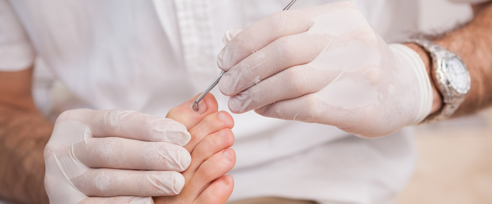
Nail Surgery
(Partial or Total Nail Avulsion)
A minor surgical procedure to treat recurring or infected ingrown toenails. The affected portion (or whole nail) is removed under local anaesthetic, with the option for permanent removal using phenolisation.
Common Conditions Treated
Ingrown Toenail
Nail Infections
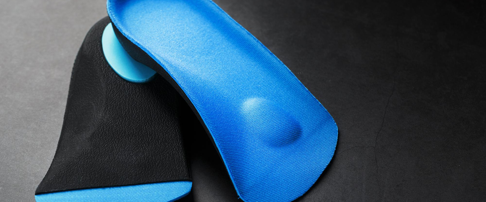
Custom Foot Orthotics
Individually prescribed insoles designed to correct biomechanical foot and lower limb dysfunctions.
Common Conditions Treated
Flat Feet
Plantal Fasciitis
Heel Pain
Shin Splints
Kness Pain
Lower Back Pain
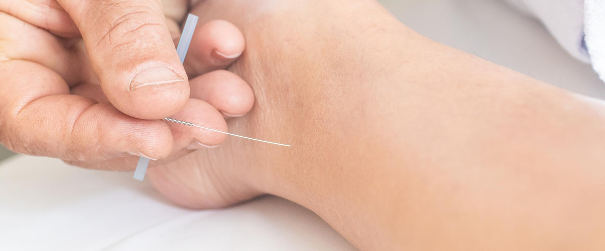
Dry Needling
Inserting fine needles into trigger points or tight muscle bands to relieve pain and tension.
Common ConditionsTreated
Myofascial Pain
Chronic Heel Pain
Muscle tightness and Spasms
Tendonitis
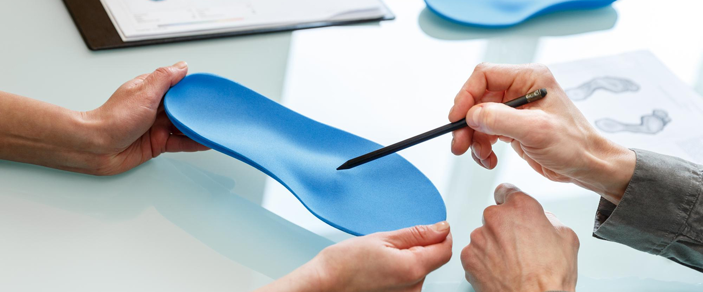
Footwear Assessment and Prescription
Expert analysis of your current footwear and professional recommendations tailored to your foot type and condition.
Common ConditionsTreated
Foot Pain
Postural Issues
Overpronation
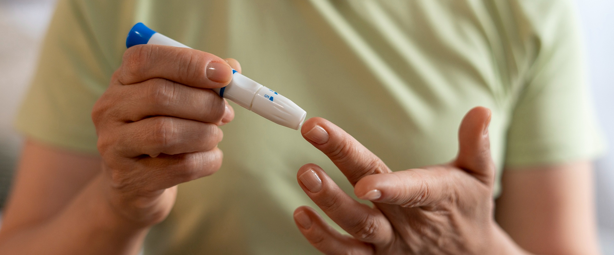
Diabetes Foot Risk Assessment
Comprehensive podiatry support for patients with diabetes, focusing on prevention, monitoring, and early intervention.
Diabetes Foot Risk Assessment include
Doppler Assessment
Monofilament(10g) Assessment
Tuning Folk Assessment
Pressure Plate Assessment
Early signs and symptoms of Diabetes Neuropathy Assessment
Footwear Assessment
Wound Assessment
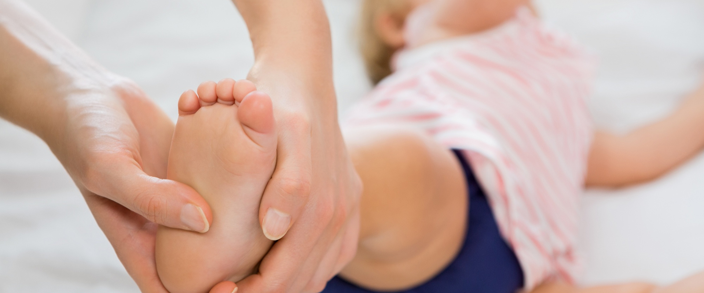
Paediatric Podiatry
Specialised assessment and treatment for children with developmental, structural, or pain-related lower limb issues.
Common ConditionsTreated
Flat Feet
Toe Walking
Sever’s Disease
In-Toeing
Out-Toeing
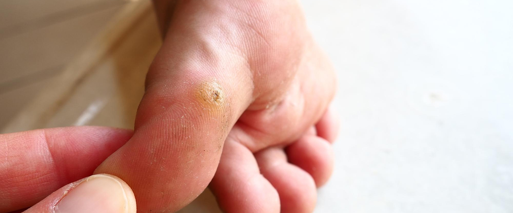
Corns, Callus & Wart Treatment
In-clinic care for painful or recurrent lesions affecting skin and nail integrity.
Common Conditions Treated
Corns
Calluses
Plantar Warts
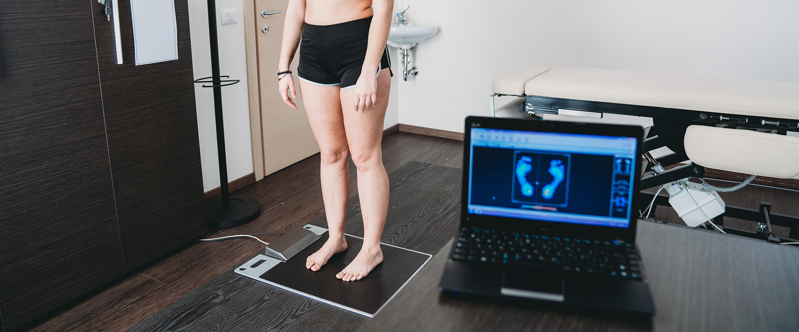
Pressure Plate Analysis
High-resolution analysis of foot pressure distribution and gait dynamics using advanced technology.
Limb Asymmetry
Overloading
Balance
- Strengthening & Conditioning
- Thermal modalities
- Individualised Strengthening &
Conditioning Programmes - Performance & Sports-Specific Training
Programmes and Guidance - Pre / Post-Game Management & Guidance
- In-Season & Off-Season
Management Programme - Injury Prevention
- Rehabilitation & Return to Sport / Activity
- Pre & Post-Operative Strengthening
Strengthening & Conditioning
We go beyond just treating pain. We empower you with tailored Strengthening & Conditioning strategies to enhance performance, accelerate recovery, and build lasting resilience. Our expert physiotherapists integrate cutting-edge techniques with evidence-based programs to help you achieve your physical goals, whether on the field, at work, or in daily life.
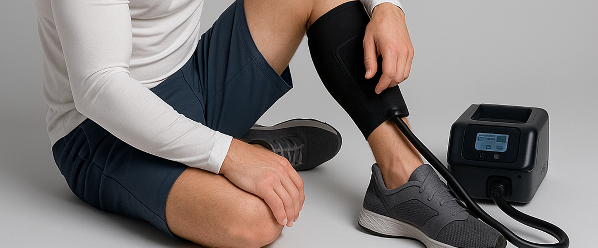
Thermal modalities
Experience accelerated recovery and pain relief with our advanced Game Ready® system. This technology combines active compression with adjustable cold therapy to effectively reduce swelling, minimize pain, and optimize tissue healing following acute injuries or post-operative procedures. It's a key tool in speeding up your recovery process, allowing you to return to activity sooner and more comfortably.
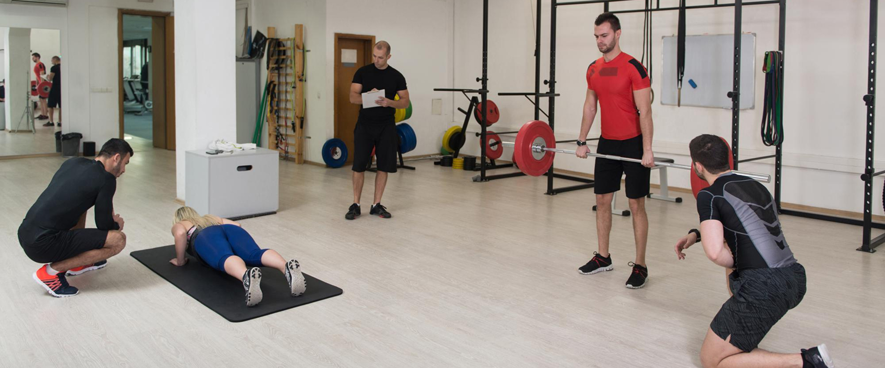
Individualised Strengthening & Conditioning Programmes
Our core offering, this service designs personalized exercise programs to build foundational strength, endurance, and overall physical capacity. Whether you're recovering from an injury, managing a chronic condition, or simply aiming for better general fitness, we'll identify your unique needs and create a progressive plan to improve muscle function, stability, and movement efficiency for all aspects of your life.
Performance & Sports-Specific
Training Programmes and Guidance
Elevate your athletic potential with training programs meticulously tailored to the demands of your specific sport or activity. Beyond general fitness, we focus on developing the power, speed, agility, and endurance required for your performance goals. Our guidance integrates advanced exercise techniques with biomechanical analysis to optimize your movement, maximize performance, and reduce sport-specific injury risks.
Pre / Post-Game Management & Guidance
Support your body before and after competition with our specialized management strategies. Pre-game preparation focuses on optimizing mobility, activating key muscles, and preventing acute injuries. Post-gamemanagement aims to accelerate recovery, reduce muscle soreness, and address any immediate concerns, ensuring you're ready for your next training session or competition. This service is designed to keep you performing consistently at your best.
In-Season & Off-Season Management Programme
For athletes, year-round strategic planning is crucial. Our In-Season Programme focuses on maintaining peak performance, managing fatigue, and preventing injuries during competitive periods, allowing you to stay on the field. The Off-Season Programme is designed for structured development, building strength, power, and addressing long-term weaknesses, setting the foundation for a stronger, more resilient next season. This holistic approach optimizes your entire athletic year.
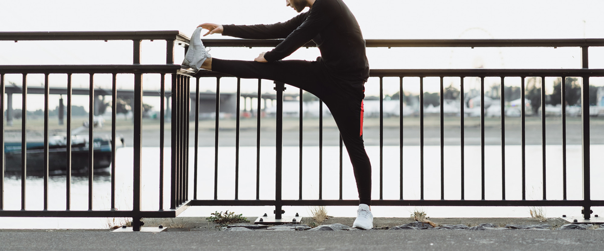
Injury Prevention
Proactive care is paramount. Our Injury Prevention service identifies your individual risk factors for common injuries through comprehensive screening and movement analysis. We then create targeted exercise programs to address muscle imbalances, mobility restrictions, and suboptimal movement patterns. By building your body's resilience and enhancing your protective mechanisms, we help you stay ahead of injuries and maintain consistent participation in your activities.
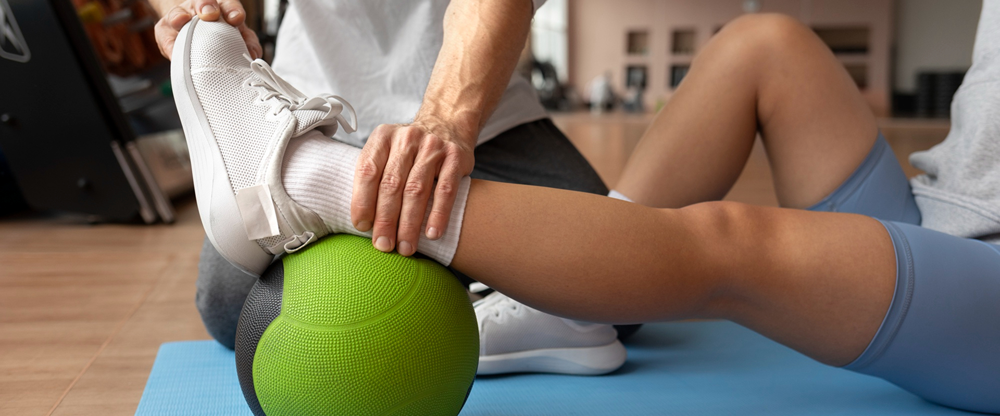
Rehabilitation & Return to Sport / Activity
This service bridges the gap between injury recovery and full, confident participation. Following an injury or surgery, we guide you through a structured, progressive rehabilitation program, focusing on restoring strength, power, agility, and sport-specific movements. Our aim is to ensure your body is fully prepared for the demands of your chosen sport or activity, minimizing the risk of re-injury and getting you back stronger than before.
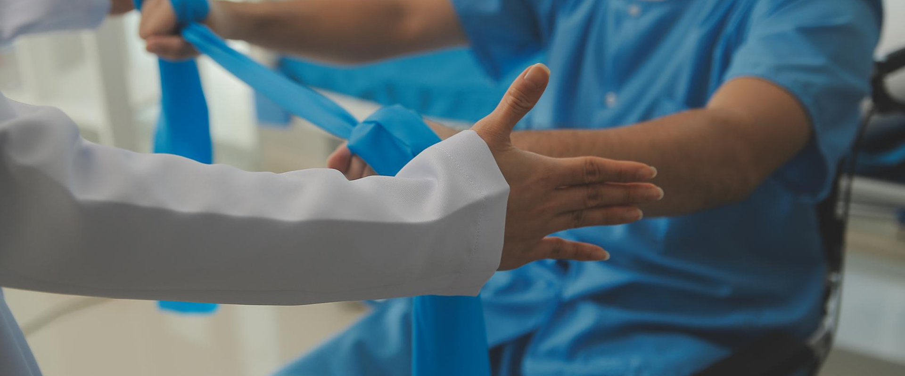
Pre & Post-Operative Strengthening
Optimize your surgical journey with our specialized programs. Pre-operative (Prehab) strengthening prepares your body for surgery by maximizing existing strength, flexibility, and muscle control, which can significantly accelerate your post-operative recovery. Following surgery, our Post-operative strengthening provides carefully graded exercises and expert guidance to help you safely regain full strength, range of motion, and function, ensuring the best possible outcome from your procedure.
- Clinical Pilates
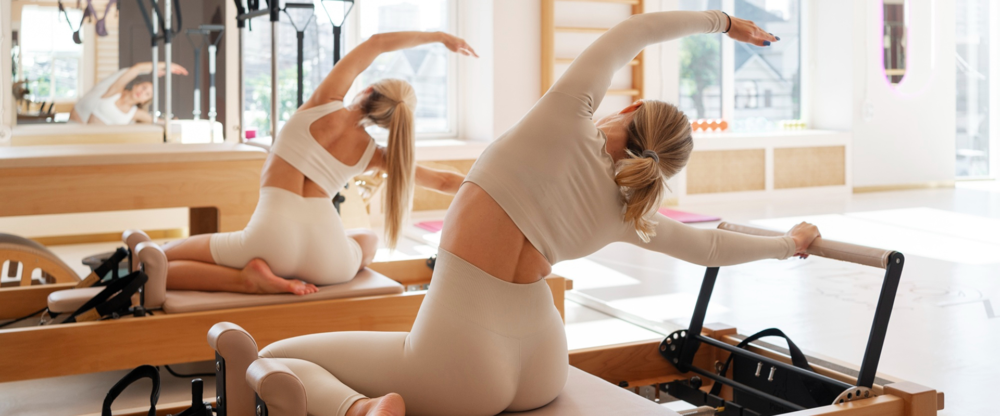
Clinical Pilates
Clinical Pilates is a form of therapeutic exercise developed by physiotherapists, designed to adapt traditional Pilates principles to treat injuries, improve movement control, and prevent the recurrence of pain or dysfunction. It is a personalised, evidence-based programme tailored to each client’s medical and physical needs.
Improve core stability and muscle control
Reduce pain (especially back, neck, and pelvic pain)
Enhance posture, alignment, and movement patterns
Support rehabilitation after surgery or injury
Prevent recurrence of injury
Improve balance, flexibility, and coordination
- Sports / Remedial Massage
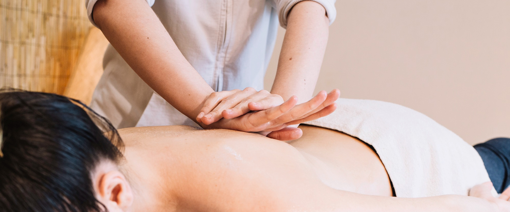
Sports / Remedial Massage
Sports and Remedial Massage is a targeted therapeutic treatment that focuses on assessing and treating musculoskeletal pain, injuries, and dysfunction. Unlike relaxation massage, it employs a range of deeper techniques – including trigger point therapy, myofascial release, deep tissue massage, and stretching - to identify and alleviate specific areas of tension, scar tissue, and adhesions within muscles, tendons, and ligaments.
Whether you're an athlete seeking to enhance performance, speed up recovery, and prevent injuries, or someone experiencing chronic muscle tension, posture-related pain (e.g., from desk work), or discomfort after an injury, this treatment can help. It promotes improved circulation, reduces muscle soreness, increases flexibility, and assists in the body's natural healing process, helping you move more freely and comfortably.
- Custom Made Orthotics
- Precision-Guided Design
- 3D / Heat-Moulding Technique
- Innovative Multi-Material Combinations
- Sport-Specific Performance Support
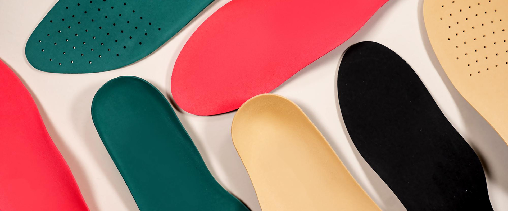
Custom Made Orthotics
1. Everyone’s feet are different
No two feet are the same — differences in arch height, foot shape, and walking patterns mean that off-the-shelf insoles often can’t provide the support your body truly needs.
2. They address the root cause of pain and misalignment
Custom orthotics help correct foot posture and alignment, reducing stress on the ankles, knees, hips, and lower back.
They are especially effective for
Plantar fasciitis
Flat feet or high arches
Knee pain
Ankle instability or poor gait
Preventing sports injuries
3. They improve comfort in both daily life and rehab
Whether you're recovering from injury, on your feet all day, or playing sports, orthotics provide targeted support to reduce fatigue and discomfort — helping you move better, longer.
4. They’re adjustable and long-term
Unlike standard insoles, our heat-mouldable, customisable orthotics can be adjusted over time to suit changes in your condition or lifestyle — making them ideal for long-term care and prevention.
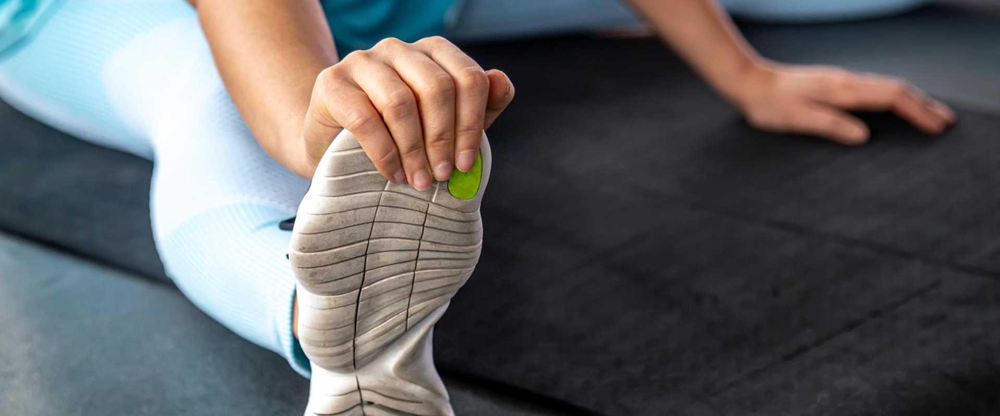
Precision-Guided Design
Using Healsy’s advanced pressure-mapping system, we analyse plantar pressure distribution with exceptional accuracy. This includes digital assessment of weight loading during gait, arch height, and left–right balance to create truly personalised solutions.
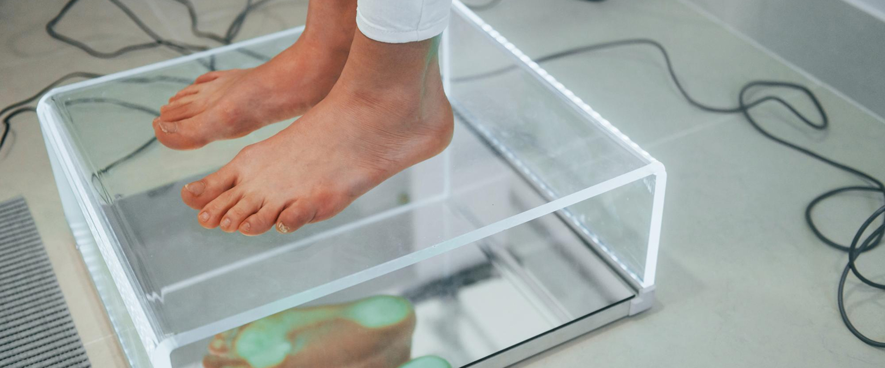
3D / Heat-Moulding Technique
Flat-shaped insoles are custom-moulded using heat-forming technology to fit the unique shape of each foot. They respond flexibly to the structure and movement of the foot.
Innovative Multi-Material Combinations
With over 60 high-performance materials and 30,000+ layer combinations, Healsy orthotics are engineered to fit your lifestyle and condition. Each pair is uniquely designed to match your foot shape, movement patterns, and daily demands.
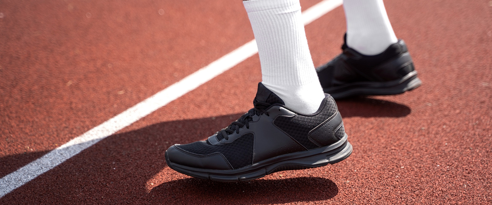
Sport-Specific Performance Support
Want to perform better in rugby, golf, basketball, football, running, or hiking?Healsy orthotics are tailored to suit the specific movements and load demands of each sport.They reduce foot fatigue and improve biomechanical efficiency — helping you move stronger, longer.
- Taping / AirCast Boots / Bracing
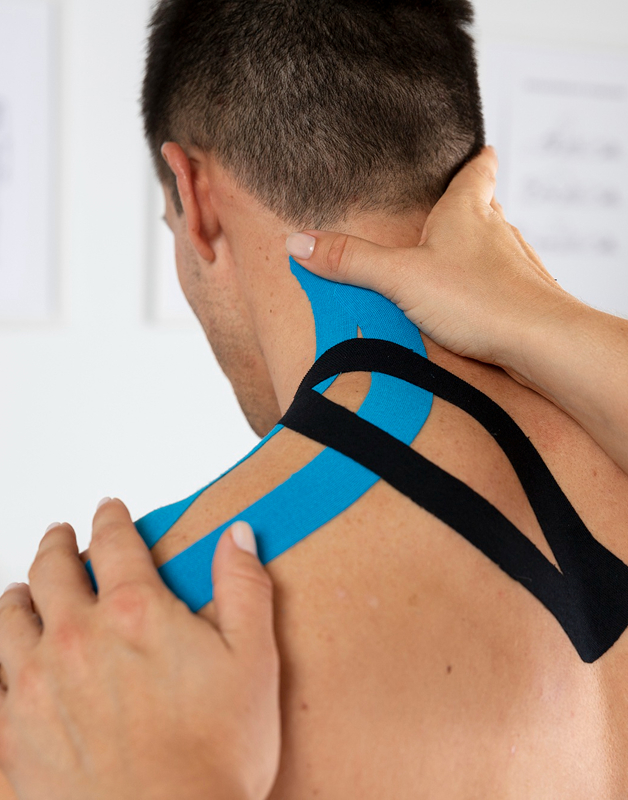
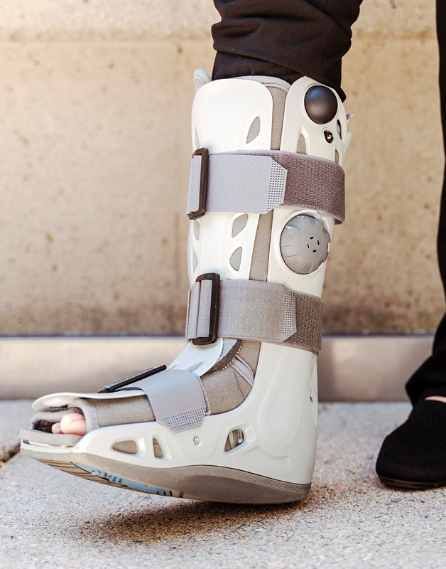
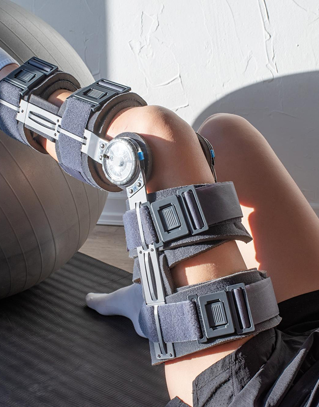
Taping / AirCast Boots / Bracing
Our clinic provides a comprehensive range of biomechanical support solutions including therapeutic taping, Aircast walking boots, and custom bracing. These interventions are designed to stabilise injured joints, protect healing tissues, offload stress from affected areas, and improve functional movement during recovery. Taping techniques, such as rigid sports taping and kinesiology taping, are used to reduce pain, support posture, and enhance proprioception. Aircast boots are ideal for managing fractures, post-operative care, and soft tissue injuries, while our selection of braces—ranging from off-the-shelf to custom-fit—address specific conditions such as ligament instability, tendon injuries, and joint degeneration. Our clinicians conduct detailed assessments to ensure the appropriate device is prescribed and fitted to support optimal healing and safe return to activity.
- EMS / ESWT / High Power Laser
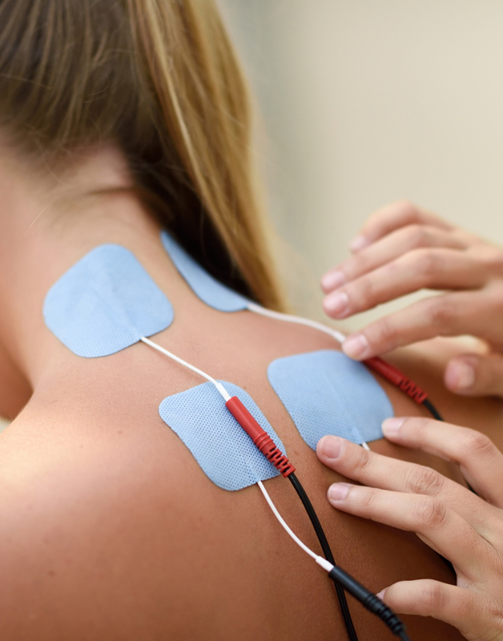
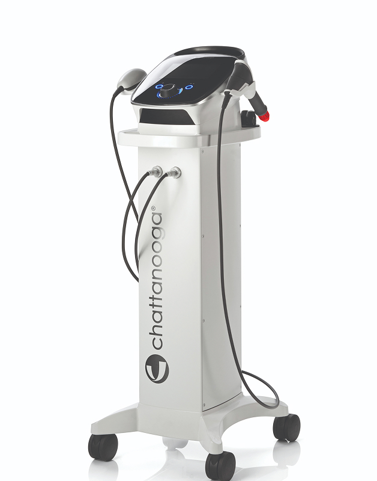
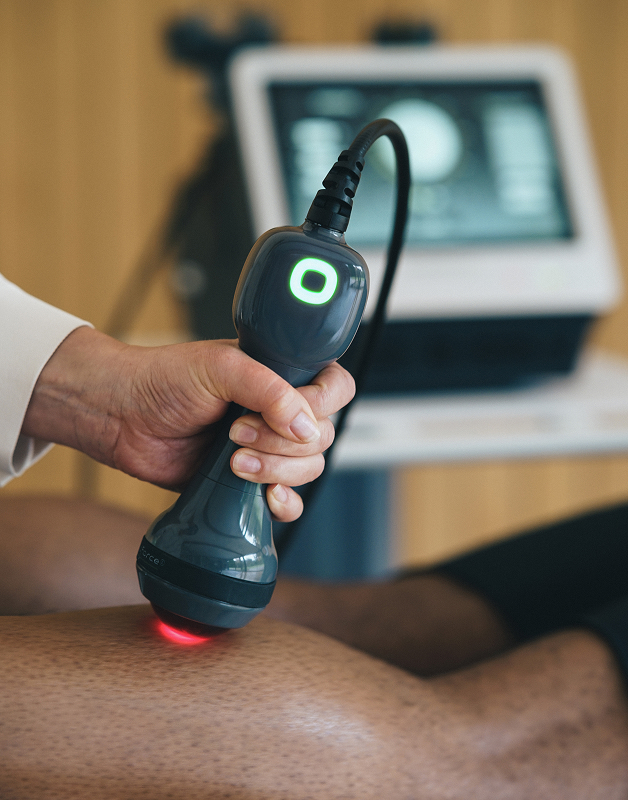
Electrical muscle stimulation (EMS),
Extracorporeal Shockwave Therapy (ESWT),
High Power Lazer
We offer advanced, evidence-based therapeutic modalities that promote tissue regeneration, alleviate pain, and restore function. Electrical Muscle Stimulation (EMS) is utilised to activate weakened muscles, improve circulation, and support neuromuscular re-education—particularly beneficial in post-surgical or neurological rehabilitation. Extracorporeal Shockwave Therapy (ESWT) is a non-invasive treatment that delivers acoustic pressure waves to target chronic tendinopathies, calcific deposits, and myofascial pain, stimulating the body’s natural healing response and improving blood flow. High Power Laser Therapy is used to deliver deep-penetrating photonic energy that reduces inflammation, accelerates cellular repair, and relieves pain in acute and chronic musculoskeletal conditions. These technologies are applied as part of a personalised treatment plan by experienced practitioners to maximise therapeutic outcomes and enhance long-term recovery.
- NDIS / Workcover / DVA / CTP
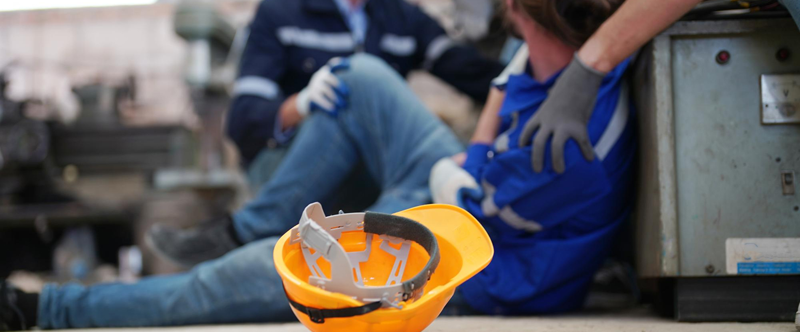
NDIS / Workcover / DVA / CTP
Our clinic is an accredited and experienced provider of allied health services under the National Disability Insurance Scheme (NDIS), WorkCover, Department of Veterans' Affairs (DVA), and Compulsory Third Party (CTP) insurance programs. We are committed to delivering client-centred care that aligns with funding requirements while addressing the unique rehabilitation needs of each individual. Whether you're recovering from an injury, managing a long-term condition, or requiring functional capacity support, our team provides structured, goal-oriented treatment plans tailored to promote independence, mobility, and quality of life. We collaborate closely with case managers, insurers, and support coordinators to ensure timely reporting, transparent communication, and continuity of care throughout your rehabilitation journey.
Privacy policy
At Healsy Orthotics
we are committed to protecting your privacy. This policy outlines how we collect, use, store, and disclose your personal information in accordance with the Australian Privacy Principles.
INFORMATION WE COLLECT
When you visit our website, interact with our staff, utilise our software, or use our products and services, we may collect the following personal information ("Personal Data")
Full name
Company name
Occupation
Email address
Phone number
Payment details
Billing address
Geographic location
IP address
Survey responses, reviews and testimonials
We may also collect information in relation to your Patients including
Names
Gender
Date of Birth
Medical Scans results
Reviews and testimonials
You can access or amend your Personal Data by logging into your account or contacting us directly.
Please note that any information you publish on our website (e.g. blog comments or testimonials) may be publicly accessible. Even if you delete this content, cached versions may still be viewable elsewhere.
USE OF YOUR INFORMATION
We use your Personal Data to
Provide and deliver our products and services
Process payments
Communicate with you
Send updates, offers, and service notifications
Gather feedback and measure customer satisfaction
Personalise your website experience
You will only receive marketing communications if you have opted in. You can unsubscribe at any time via the link in our emails or by contacting us.
Our website also uses digital identifiers such as cookies to enhance your browsing experience by
Analysing website traffic and usage
Enable social media sharing features
Provide targeted advertising through third-party platforms
Most browsers accept cookies automatically, but you can disable them via your browser settings. Doing so may limit some functionality of our website.
We may use anonymised and aggregated data (non-personally identifiable information) to
Improve our services and website functionality
Analyse customer behaviour and website usage
Serve targeted advertisements via platforms such as Google Ads and Facebook
STORAGE AND SECURITY OF DATA
We take reasonable steps to protect your Personal Data from loss, misuse, unauthorised access, or disclosure via the following protocols.
All data is stored securely on our protected servers.
Personal data stored in paper records at our company will be physically secured.
We will not record any payment information. Credit card data is encrypted during transmission and is not stored on our systems.
Personal Data may be stored or processed outside of Australia, but only in countries that provide adequate data protection.
We retain Personal Data for only as long as necessary to provide services and comply with our legal obligations.
If a data breach occurs and your information is affected, we will notify you in accordance with applicable laws.
SHARING OF YOUR INFORMATION
We do not sell, trade, or rent your Personal Data to any third party.
Your information may be shared with third parties only when necessary to
Fulfill purchases and process payments
Provide technical and marketing support
Deliver IT infrastructure and related services
Comply with legal or regulatory requirements
Protect our rights, property, or safety
Any third-party service providers we engage are required to uphold the same privacy standards outlined in this policy and are prohibited from using your data for any purpose other than providing services on our behalf.
ACCESS TO PERSONAL INFORMATION
If you ask us, we will give you access to the personal information we hold about you. We will always confirm your identity before giving access to your personal information. However, there are circumstances under Australian privacy laws where we may not give you access to the personal information we hold about you. For example, we can’t give you access if it would unreasonably affect someone else’s privacy or if giving you access poses a serious threat to someone’s life, health or safety.
LEGAL DISCLOSURES
We may disclose Personal Data if required by law or in connection with legal proceedings, regulatory investigations, or enforcement actions.
In the event of a business transfer (e.g. merger or sale), customer information may be transferred to the new owner under a confidentiality agreement.
EXTERNAL LINKS
Our website may contain links to third-party websites for your convenience. We are not responsible for the privacy practices or content of external sites. We encourage you to review their privacy policies before providing any personal information.
CHANGE IN PRIVACY POLICY
We may from time to time update our privacy policy to ensure remains current. If we decide to so, all updates will be effective immediately upon being published.
CONTACT US
If you have any queries or concerns about our privacy policy or the use of your Personal Data, please contact us at contact@heasly.com.au